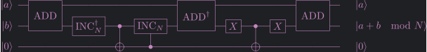

Tangled:
import math import random from fractions import Fraction from numbers import Integral from typing import Optional, Union import sympy as sp from qiskit import (AncillaRegister, ClassicalRegister, QuantumCircuit, QuantumRegister, transpile) from qiskit.circuit import ControlledGate, Gate from qiskit.circuit.library import SwapGate from qiskit_aer import AerSimulator from sympy import I, exp, pi
Not tangled:
from fractions import Fraction from qiskit.circuit import QuantumCircuit, Gate
NOTE: In this chapter I implement Shor's Algorithm using Qiskit. It works but it is not pretty. Do not expect it to factor anything larger than 15 or 21 (via simulation). I did not do any optimizations to reduce the number of qubits or gates required. My goal was to closely follow the presentation in the book and stay conceptually simple. For a simulation probably the number of qubits is the critical measure.
Also note that I tried to put the sub-circuits into didicated Gate and ControlledGate
classes. Mainly to have nice drawings. For example the ControlledGate makes sure that
you clearly see which qubits are the controls. Unfortunately this seem to come with a
major performance bottleneck for big circuits (I did not investigate this deeper but it
seems that a lot of stuff is copied around and work is repeated). Therefore sometimes had
to do strange workarounds making the code less readable - sorry for that. This is my first
time really using Qiskit so do not expect too much from the code.
from chapter_4 import Rz, theta from continued_fractions import get_convergent
These are the operators \(R_k\) appearing in the implementation of the Fourier Transform:
k = sp.symbols('k', integer=True) Rk = sp.simplify(exp(2*pi*I*2**(-k-1)) * Rz.subs(theta, 2*pi*2**(-k)))
Next we define a function to generate a circuit implementing the quantum Fourier transform. This is very easy since the part containing the rotations has a nice recursive structure.
def make_qft(size: Integral) -> Gate: qc = QuantumCircuit(size) def append_rotations(qc: QuantumCircuit, size: Integral): if size == 0: return qc.h(size - 1) for i in range(size - 1, 0, -1): # reversed order makes a nicer plot qc.cp(math.pi * 2**(-i), size - 1, size - i - 1) append_rotations(qc, size - 1) def append_swaps(qc, size): for i in range(size // 2): qc.swap(i, size - i - 1) append_rotations(qc, size) append_swaps(qc, size) return qc.to_gate(label="QFT") def make_qft_dg(size: Integral) -> Gate: qft = make_qft(size) return qft.definition.inverse().to_gate(label="QFT^†")
Note that qiskit orders the wires in a different order then the book.
qft = make_qft(4) qft.definition.draw()
┌───┐
q_0: ──────■───────────────────────────────■──────────────────────■───────┤ H ├─X─
│ │ ┌───┐ │P(π/2) └───┘ │
q_1: ──────┼────────■──────────────────────┼────────■───────┤ H ├─■─────────X───┼─
│ │ ┌───┐ │P(π/4) │P(π/2) └───┘ │ │
q_2: ──────┼────────┼────────■───────┤ H ├─■────────■───────────────────────X───┼─
┌───┐ │P(π/8) │P(π/4) │P(π/2) └───┘ │
q_3: ┤ H ├─■────────■────────■──────────────────────────────────────────────────X─
└───┘
Recall that phase estimation for the order finding problem requires to exponentiate an operator \(U_a:\ket{j}\mapsto\ket{aj\mod N}\). This operator has the nice property
\[ U_a^n = U_{a^n \mod N} . \]
Therefore having a way to implement \(U_a\) for any \(a\) already gives us the required powers. This is important since implementing the powers of \(U_a\) by just repeating the circuit for \(U_a\) would result in an exponantially deep circuit for phase estimation.
To implement \(U_a\) we need to be able to perform basic arithmetic. We will implement the following operations:
More precisely we only implement the unary versions of these operations. For example instead of \((a,b)\mapsto a+b\) we implement \(b\mapsto a+b\) for a fixed integer \(a\). We call this an incrementer.
Our implementation closely follows (Thomas G. Draper, 2000) and (Stephane Beauregard, 2003). For simplicity we omit some optimizations at the cost of a slower algorithm. We implement all operations in Fourier space. This saves qubits, at the cost of a deeper circuit.
Let us start with the incrementation operator in Fourier space. Let us denote \(\ket{\phi(j)}=\FT\ket{j}\). This circuit implements \(\ket{\phi(j)}\mapsto\ket{\phi(a+j)}\) for a fixed integer \(a\).
def make_control_prefix(num_ctrls: int): return "" if num_ctrls == 0 else "c"*num_ctrls + "_" class FourierIncrementGate(Gate): """Implements |ϕ(j)> -> |ϕ(a+j)> where a is the increment.""" def __init__(self, num_qubits: int, increment: int, label: Optional[str] = None): """Create a new Fourier incrementer gate.""" super().__init__(f"ϕinc({increment})", num_qubits, [], label=label) assert 2**num_qubits > increment, \ f"Increment {increment} is too large for {num_qubits} bits." self._increment = increment def _define(self): qc = QuantumCircuit(self._num_qubits) for k in range(self._num_qubits): qc.p(2*math.pi*self._increment*2**(-self._num_qubits+k), k) self.definition = qc
The reasoning to see that the circuit does what we want is essentially the same as the reasoning behind the representation of \(\FT\ket{j}\) as a product state.
The actual incrementation operator can be obtained by conjugating this circuit by the Fourier transform:
class IncrementGate(Gate): """Implements |j> -> |a+j> where a is the increment.""" def __init__(self, num_qubits: int, increment: int, label: Optional[str] = None): """Create a new incrementer gate.""" super().__init__(f"inc({increment})", num_qubits, [], label=label) assert 2**num_qubits > increment, \ f"Increment {increment} is too large for {num_qubits} bits." self._increment = increment def _define(self): qc = QuantumCircuit(self._num_qubits) finc = FourierIncrementGate(self._num_qubits, self._increment) qft = make_qft(self._num_qubits) qft_dg = make_qft_dg(self._num_qubits) qc.append(qft, range(self._num_qubits)) qc.append(finc, range(self._num_qubits)) qc.append(qft_dg, range(self._num_qubits)) self.definition = qc
We actually do not need make_incrementer for our phase estimation (since we want to do
as many operations as possible in the Fourier space due to the cost of the Fourier
transform). But it is still nice to have it, for example for testing purposes.
inc = IncrementGate(4, 3) inc.definition.decompose('ϕinc(3)').draw()
┌──────┐┌─────────┐┌────────┐
q_0: ┤0 ├┤ P(3π/8) ├┤0 ├
│ │├─────────┤│ │
q_1: ┤1 ├┤ P(3π/4) ├┤1 ├
│ QFT │├─────────┤│ QFT^† │
q_2: ┤2 ├┤ P(3π/2) ├┤2 ├
│ │└┬───────┬┘│ │
q_3: ┤3 ├─┤ P(3π) ├─┤3 ├
└──────┘ └───────┘ └────────┘
Next we implement modular incrementation. Unfortunately the circuit is a bit complicated. But the idea is simple: Let \(a\) be the increment, \(N\) the modulus, and let \(b\) be the input to the circuit. We want to calculate \(a+b\mod N\). The size of the circuit is chosen in a way that \(a\) and \(b\) can be represented with leading bit still being zero (this implies in particular that \(a+b\) can be represented). The circuit essentially does the following (arithmetic carried out in Fourier space):
Note that the CNOT is responsible to write a 1 into the ancillary qubit iff underflow
occurs. The reason why the circuit looks more complicated is that we have to uncompute
everything written to the ancilla.
def modulus_size(modulus: int): return (modulus - 1).bit_length() def make_modular_fourier_incrementer(increment: int, modulus: int, num_ctrls: int=0) -> Gate: """Implements |ϕ(j)> -> |ϕ(a+j mod N)> where a is the increment and N the modulus. Args: increment: The fixed increment hardcoded into the circuit. modulus: The modulus hardcoded into the circuit. num_ctrls: This many control qubits are added before all other qubits. Note: The last wire is an ancillary qubit which needs to be initialized to |0>. """ size = modulus_size(modulus) + 1 qreg_ctrl = QuantumRegister(num_ctrls, "c") qreg = QuantumRegister(size, "q") qreg_anc = QuantumRegister(1, "a") qreg2 = list(qreg_ctrl) + list(qreg) qc = QuantumCircuit(qreg_ctrl, qreg, qreg_anc) inc_a = FourierIncrementGate(size, increment) cc_inc_a = inc_a if num_ctrls == 0 else inc_a.control(num_ctrls) inc_N = FourierIncrementGate(size, modulus) c_inc_N = FourierIncrementGate(size, modulus).control(1) cc_inc_a_dg = cc_inc_a.inverse() inc_N_dg = inc_N.inverse() qft = make_qft(size) qft_dg = make_qft_dg(size) qc.append(cc_inc_a, qreg2) qc.append(inc_N_dg, qreg) qc.append(qft_dg, qreg) qc.cx(qreg[-1], qreg_anc[0]) qc.append(qft, qreg) qc.append(c_inc_N, list(qreg_anc) + list(qreg)) qc.append(cc_inc_a_dg, qreg2) qc.append(qft_dg, qreg) qc.cx(qreg[-1], qreg_anc[0], ctrl_state=0) qc.append(qft, qreg) qc.append(cc_inc_a, qreg2) prefix = make_control_prefix(num_ctrls) return qc.to_gate(label=f"{prefix}ϕinc({increment})mod({modulus})") class ModularFourierIncrementGate(Gate): """Implements |ϕ(j)> -> |ϕ(a+j mod N)>.""" def __init__(self, increment: int, modulus: int, label: Optional[str] = None): """Create a new modular Fourier incrementer gate. Args: increment: The increment 'a' hardcoded into the circuit. modulus: The modulus 'N' hardcoded into the circuit. Note: The last wire is an ancillary qubit which needs to be initialized to |0>. """ num_qubits = modulus_size(modulus) + 2 super().__init__(f"ϕinc({increment})mod({modulus})", num_qubits, [], label=label) self._increment = increment self._modulus = modulus def _define(self): qc = make_modular_fourier_incrementer(self._increment, self._modulus).definition self.definition = qc def control( self, num_ctrl_qubits: int = 1, label: Optional[str] = None, ctrl_state: Optional[Union[str, int]] = None, ): gate = MCModularFourierIncrementGate( self._increment, self._modulus, num_ctrl_qubits) gate.base_label = self.label return gate class MCModularFourierIncrementGate(ControlledGate): """Implements controlled version of |ϕ(j)> -> |ϕ(a+j mod N)>.""" def __init__( self, increment: int, modulus: int, num_ctrl_qubits: int, ctrl_state: Optional[Union[str, int]] = None, label: Optional[str] = None): """Create a new modular Fourier incrementer gate. Args: increment: The increment 'a' hardcoded into the circuit. modulus: The modulus 'N' hardcoded into the circuit. num_ctrl_qubits: The number of controls added to the front. Note: The last wire is an ancillary qubit which needs to be initialized to |0>. """ assert ctrl_state is None, "sorry ctrl_state not implemented" super().__init__( "mcfinc", num_ctrl_qubits + modulus_size(modulus) + 2, [], num_ctrl_qubits=num_ctrl_qubits, base_gate=ModularFourierIncrementGate(increment, modulus, label=label), label=label, ) self._increment = increment self._modulus = modulus def _define(self): qc = make_modular_fourier_incrementer( self._increment, self._modulus, self.num_ctrl_qubits).definition self.definition = qc
You may wonder why this function (and make_fourier_incrementer) takes an argument
num_ctrls. We could easily add controls by using the builtin Gate.control method. At
first I did it this way but it turned out that building the phase estimation circuit took
extremely long. Profiling with cProfile revealed that around 95% of the time was spent
generating the controls. Hence I implemented it manually saving a lot of time. The main
reason why this worked is that - at the time of writing this - the Gate.control method
recursively adds controls to each gate contained in the circuit. But this is not necessary
for this circuit, instead it suffices to put the control at just the incrementer for \(a\).
finc_mod = make_modular_fourier_incrementer(3, 7) finc_mod.definition.draw(fold=80)
┌──────────┐┌─────────────┐┌────────┐ ┌──────┐┌──────────┐»
q_0: ┤0 ├┤0 ├┤0 ├─────┤0 ├┤0 ├»
│ ││ ││ │ │ ││ │»
q_1: ┤1 ├┤1 ├┤1 ├─────┤1 ├┤1 ├»
│ Φinc(3) ││ ϕinc(7)_dg ││ QFT^† │ │ QFT ││ Φinc(7) │»
q_2: ┤2 ├┤2 ├┤2 ├─────┤2 ├┤2 ├»
│ ││ ││ │ │ ││ │»
q_3: ┤3 ├┤3 ├┤3 ├──■──┤3 ├┤3 ├»
└──────────┘└─────────────┘└────────┘┌─┴─┐└──────┘└────┬─────┘»
q_4: ─────────────────────────────────────┤ X ├─────────────■──────»
└───┘ »
« ┌─────────────┐┌────────┐ ┌──────┐┌──────────┐
«q_0: ┤0 ├┤0 ├─────┤0 ├┤0 ├
« │ ││ │ │ ││ │
«q_1: ┤1 ├┤1 ├─────┤1 ├┤1 ├
« │ ϕinc(3)_dg ││ QFT^† │ │ QFT ││ Φinc(3) │
«q_2: ┤2 ├┤2 ├─────┤2 ├┤2 ├
« │ ││ │ │ ││ │
«q_3: ┤3 ├┤3 ├──o──┤3 ├┤3 ├
« └─────────────┘└────────┘┌─┴─┐└──────┘└──────────┘
«q_4: ─────────────────────────┤ X ├────────────────────
« └───┘
We implement the corresponding operation in real space to have something to test against:
class ModularIncrementGate(Gate): """Implements |j> -> |a+j mod N>.""" def __init__(self, increment: int, modulus: int, label: Optional[str] = None): """Create a new modular incrementer gate. Args: increment: The increment 'a' hardcoded into the circuit. modulus: The modulus 'N' hardcoded into the circuit. Note: The last wire is an ancillary qubit which needs to be initialized to |0>. """ num_qubits = modulus_size(modulus) + 2 super().__init__(f"inc({increment})mod({modulus})", num_qubits, [], label=label) self._increment = increment self._modulus = modulus def _define(self): mfinc = ModularFourierIncrementGate(self._increment, self._modulus) qreg_size = mfinc.num_qubits - 1 # one ancilla qft = make_qft(qreg_size) qft_dg = make_qft_dg(qreg_size) qc = QuantumCircuit(qreg_size + 1) qc.append(qft, range(qreg_size)) qc.append(mfinc, range(qreg_size + 1)) qc.append(qft_dg, range(qreg_size)) self.definition = qc
gate = ModularIncrementGate(3, 7) gate.definition.draw()
┌──────┐┌────────────────┐┌────────┐
q_0: ┤0 ├┤0 ├┤0 ├
│ ││ ││ │
q_1: ┤1 ├┤1 ├┤1 ├
│ QFT ││ ││ QFT^† │
q_2: ┤2 ├┤2 Φinc(3)mod(7) ├┤2 ├
│ ││ ││ │
q_3: ┤3 ├┤3 ├┤3 ├
└──────┘│ │└────────┘
q_4: ────────┤4 ├──────────
└────────────────┘
This function can be used to test (manually or via CI) that the above implementations for incrementation or modular incrementation works:
def quantum_add(a: int, b: int, modulus: int = None, size: int = None) -> int: """Compute a + b or a + b mod modulus. Args: a,b: The two summands. size: The number of qubits to represent a and b. Ignored if modulus is given. modulus: Some number required to be larger than a and b. Note: Uses make_incrementer or make_modular_incrementer depending whether modulus is given or not. """ assert a >= 0 and b >= 0, "a and b must be positive" if modulus is None: assert size is not None, "Specify 'size'" inc = IncrementGate(size, a) qc = QuantumCircuit(size) else: assert a < modulus and b < modulus, "a and b must be smaller than modulus" inc = ModularIncrementGate(a, modulus) size = inc.num_qubits qc = QuantumCircuit(size) # Not nice but works: Implicitly treats ancilla for the modular case correctly. qc.initialize(f"{b:0{size}b}") qc.append(inc, range(size)) qc.measure_all() sim = AerSimulator() qc_obj = transpile(qc, sim) counts = sim.run(qc_obj).result().get_counts() largest_count = 0 for bits, count in counts.items(): if count > largest_count: largest_count = count result = int(bits, base=2) return result
Next we implement
\[ V(a,N): \quad \ket{x,b} \mapsto \ket{x, b + ax \mod N} . \]
This is essentially the multiplication operation using an auxiliary register which serves as the output register. The idea of the circuit is simple. It is based on the identity:
\[ ax \mod N = \sum_{i=0}^n x_i(a\cdot 2^i) , \]
where \(n\) is the number of bits. The sum on the right can be implemented by a series of \(n+1\) controlled (by the \(x_i\)) incrementation operations.
def make_VaN(a: int, modulus: int, num_ctrls: int = 0, fast_mode=True) -> Gate: """Implements |x,b> -> |x,b+ax mod N>. Args: fast_mode: Usage of ModularFourierIncrementGate slows down everything dramatically, use make_modular_fourier_incrementer directly in case of fast_mode=True. """ int_size = modulus_size(modulus) + 1 qreg_ctrl = QuantumRegister(num_ctrls, "c") qreg_x = QuantumRegister(int_size, "x") qreg_b = QuantumRegister(int_size, "b") qreg_anc = AncillaRegister(1, "a") qft = make_qft(int_size) if num_ctrls == 0 else make_qft(int_size).control(num_ctrls) qft_dg = make_qft_dg(int_size) if num_ctrls == 0 else make_qft_dg(int_size).control(num_ctrls) qc = QuantumCircuit(qreg_ctrl, qreg_x, qreg_b, qreg_anc) qc.append(qft, list(qreg_ctrl) + list(qreg_b)) for i in range(int_size - 1): ai = a * 2**i % modulus if fast_mode: cfinc = make_modular_fourier_incrementer(ai, modulus, num_ctrls=num_ctrls + 1) else: cfinc = ModularFourierIncrementGate(ai, modulus).control(num_ctrls + 1) qc.append(cfinc, list(qreg_ctrl) + [qreg_x[i]] + list(qreg_b) + list(qreg_anc)) qc.append(qft_dg, list(qreg_ctrl) + list(qreg_b)) prefix = make_control_prefix(num_ctrls) return qc.to_gate(label=f"{prefix}(b + {a}x mod {modulus})")
As an example, here is a circuit which multiplies the input by 3 modulo 11:
gate = make_VaN(3, 11, fast_mode=False) # Nicer picture without fast_mode - sorry gate.definition.draw()
q_0: ─────────────────■────────────────────────────────────────────────────────────────────────────
│
q_1: ─────────────────┼──────────────────■─────────────────────────────────────────────────────────
│ │
q_2: ─────────────────┼──────────────────┼──────────────────■──────────────────────────────────────
│ │ │
q_3: ─────────────────┼──────────────────┼──────────────────┼──────────────────■───────────────────
│ │ │ │
q_4: ─────────────────┼──────────────────┼──────────────────┼──────────────────┼───────────────────
┌──────┐┌────────┴────────┐┌────────┴────────┐┌────────┴────────┐┌────────┴────────┐┌────────┐
q_5: ┤0 ├┤0 ├┤0 ├┤0 ├┤0 ├┤0 ├
│ ││ ││ ││ ││ ││ │
q_6: ┤1 ├┤1 ├┤1 ├┤1 ├┤1 ├┤1 ├
│ ││ ││ ││ ││ ││ │
q_7: ┤2 QFT ├┤2 ├┤2 ├┤2 ├┤2 ├┤2 QFT^† ├
│ ││ Φinc(3)mod(11) ││ Φinc(6)mod(11) ││ Φinc(1)mod(11) ││ Φinc(2)mod(11) ││ │
q_8: ┤3 ├┤3 ├┤3 ├┤3 ├┤3 ├┤3 ├
│ ││ ││ ││ ││ ││ │
q_9: ┤4 ├┤4 ├┤4 ├┤4 ├┤4 ├┤4 ├
└──────┘│ ││ ││ ││ │└────────┘
q_10: ────────┤5 ├┤5 ├┤5 ├┤5 ├──────────
└─────────────────┘└─────────────────┘└─────────────────┘└─────────────────┘
Finally we arrive at the circuit we actually care for:
\[ U(a,N): \ket{x} \mapsto \ket{ax \mod N} . \]
The circuit works by first calculating the result using \(V(a,N)\). In the second step the result is moved into the input register utilizing swap gates. Finally, in the third step, we need to uncompute garbage, what can be done by \(V(a^{-1},N)^\dagger\).
def make_UaN(a: int, modulus: int, num_ctrls: int = 0) -> Gate: """Implements |x> -> |ax mod N>.""" L = modulus_size(modulus) + 1 qreg_ctrl = QuantumRegister(num_ctrls, "c") qreg = QuantumRegister(L, "q") qreg_anc = AncillaRegister(L + 1, "a") VaN = make_VaN(a, modulus, num_ctrls) Va1N = make_VaN(pow(a, -1, modulus), modulus, num_ctrls) Va1N_dg = Va1N.definition.inverse().to_gate(label=f"{Va1N.label}^†") qc = QuantumCircuit(qreg_ctrl, qreg, qreg_anc) qc.append(VaN, list(qreg_ctrl) + list(qreg) + list(qreg_anc)) for i in range(qreg.size - 1): # last bit just for overflow swap = SwapGate() if num_ctrls == 0 else SwapGate().control(num_ctrls) qc.append(swap, list(qreg_ctrl) + [qreg[i], qreg_anc[i]]) qc.append(Va1N_dg, list(qreg_ctrl) + list(qreg) + list(qreg_anc)) # FIXME: for some weird reason I *must* convert this to_gate here (and convert it back during # usage) to make the transpile step work. return qc.to_gate() class UaNGate(Gate): """Implements |x> -> |ax mod N>.""" def __init__( self, a: int, modulus: int, label: Optional[str] = None, ): """Create a new U(a, N) gate.""" L = modulus_size(modulus) + 1 num_qubits = 2*L + 1 super().__init__( f"{a}x mod {modulus}", num_qubits, [], label=label, ) self._increment = a self._modulus = modulus def _define(self): qc = make_UaN(self._increment, self._modulus).definition self.definition = qc class MCUaNGate(ControlledGate): """Implements controlled version of |x> -> |ax mod N>.""" def __init__( self, a: int, modulus: int, num_ctrl_qubits: int, ctrl_state: Optional[Union[str, int]] = None, label: Optional[str] = None, ): """Create a new CU(a, N) gate.""" assert ctrl_state is None, "sorry ctrl_state not implemented" L = modulus_size(modulus) + 1 num_qubits = 2*L + 1 super().__init__( f"mcuan", num_qubits + num_ctrl_qubits, [], num_ctrl_qubits=num_ctrl_qubits, label=label, base_gate=UaNGate(a, modulus), ) self._increment = a self._modulus = modulus def _define(self): qc = make_UaN(self._increment, self._modulus, num_ctrls=self.num_ctrl_qubits).definition self.definition = qc
This is how looks like for \(a=3\) and modulus \(7\):
Ua = UaNGate(3, 11) Ua.definition.draw()
┌───────────────────┐ ┌─────────────────────┐
q_0: ┤0 ├─X──────────┤0 ├
│ │ │ │ │
q_1: ┤1 ├─┼──X───────┤1 ├
│ │ │ │ │ │
q_2: ┤2 ├─┼──┼──X────┤2 ├
│ │ │ │ │ │ │
q_3: ┤3 ├─┼──┼──┼──X─┤3 ├
│ │ │ │ │ │ │ │
q_4: ┤4 ├─┼──┼──┼──┼─┤4 ├
│ │ │ │ │ │ │ │
q_5: ┤5 (b + 3x mod 11) ├─X──┼──┼──┼─┤5 (b + 4x mod 11)^† ├
│ │ │ │ │ │ │
q_6: ┤6 ├────X──┼──┼─┤6 ├
│ │ │ │ │ │
q_7: ┤7 ├───────X──┼─┤7 ├
│ │ │ │ │
q_8: ┤8 ├──────────X─┤8 ├
│ │ │ │
q_9: ┤9 ├────────────┤9 ├
│ │ │ │
q_10: ┤10 ├────────────┤10 ├
└───────────────────┘ └─────────────────────┘
Note that three bits are sufficient to represent the number \(7\). That explains why three swap gates are used.
In this section I want to fill a (tiny) gap in the algorithm for order finding (section 5.3.1).
Recall that after executing the phase estimation routine we obtain an \(2L+1\) bit number \(\varphi\). If we are not too unlucky it equals approximately \(s/r\) for a non-zero \(z\). The error is given by the number of bits used (\(2L+1\)). From a sufficient criterion to be a convergent it is deduced that \(s/r\) must be a convergent of \(\varphi\).
So far so good. But which of the convergents \(p_n/q_n\) is the right one? The book does not really tell us. What we know is that \(q_n < N\). It would be convenient if it is the last convergent with this property. We prove that this is indeed true. But first let us see why this is a non-trivial fact.
To illustrate the problem assume that \(N\) is very large, say a number which needs
\(L=100\) bits. Moreover assume that the order \(r\) is very small, say \(r=3\). Assume \(s=1\)
and observe that \(s/r\) cannot be exactly represented in binary. Ask python what it
thinks the best rational approxmation to \(1/3\) is:
Fraction(1/3)
6004799503160661/18014398509481984
Might we be at risk to deduce that the order is 18014398509481984?
The reason for this large denominator is that \(1/3\) is represented by a double precision
data type which by the IEEE standard has 52 bits available for the fractional part. Also
note that \(1/3\) is slightly less than \(2^{-1}\). Hence one might suspect that the double
precision representation of \(\frac{1}{3}\) starts to show its lack of exactness at a
denominator size of roughly \(2^{53}\). In fact, this is what happens:
print(Fraction(1/3).limit_denominator(2**53)) print(Fraction(1/3).limit_denominator(2**54))
1/3 6004799503160661/18014398509481984
Unsurprisingly the denominator is a power of two:
assert 18014398509481984 == 2**54 "PASSED"
PASSED
Let us show that the correct convergent \(p_n/q_n\) is indeed the one with maximal \(q_n\) which still satisfies \(q_n < N\). First let us show an important Lemma:
Let \(s < r < N\) be non-negative integers and \(\varphi\in[0,1)\) real. Assume
\[ \abs{\varphi - \frac{s}{r}} \leq \frac{1}{2 N^2} . \]
Then \(s/r\) is a convergent of \(\varphi\) and the next convergent has a denominator which is larger than \(N\).
Once this is established recall that \(N\) is an \(L\) bit integer and \(\varphi\) is precise up to \(2L+1\) bits. This implies that the premise of the lemma is satisfied and shows the claim. It is left to prove the Lemma.
Fraction(ϕ).limit_denominator(N) can be used to find
\(s/r\) in the phase estimation problem for order finding.PROOF 1: We will show that \(r/s\) is the only rational number with a denominator smaller than \(N\) which satisfies the above inequality. Let \(p/q\) be another such number with \(q < N\). By the triangle inequality we have
\[ \abs{\frac{p}{q} - \frac{s}{r}} \leq \frac{1}{N^2} . \]
Since \(r,q < N\), this implies
\[ \abs{pr - sq} \leq \frac{rq}{N^2} < 1. \]
Hence \(pr=sq\). In other words \(p/q=s/r\) (but not necessarily \(p=s\) and \(q=s\) which is only the case under coprimness assumption). Hence \(s/r\) is the only rational this close to \(\varphi\) with denominator being smaller than \(N\). Since each convergent is strictly closer to \(\varphi\) than the previous one (see here) the claim is proved. QED.
PROOF 2: Let us write \(s/r=p_n/q_n\) with coprime nominator and denominator. By the error formula for convergents and the recursion formula for \(p_n\) and \(q_n\) we have:
\[ q_n (q_{n+1} + q_n/z_{n+2}) = q_n (z_{n+1} q_n + q_{n-1}) \geq 2 N^2 . \]
Since \(q_n < N\), \(q_n < q_{n+1}\), and \(z_i\geq 1\) we deduce \(q_{n+1}>N\). QED.
Next we implement phase estimation for order finding, following the book.
def eps_bits(eps: float) -> int: """Number of additional qubits required to guarantee a success probability of at least 1-eps (theoretically). See Chapter 5.2.1.""" assert eps > 0, "eps must be strictly positive." return math.ceil(math.log(2.0 + 0.5/eps)) def make_order_finding_phase_estimation(a: int, modulus: int, eps: float) -> QuantumCircuit: """Make a phase estimation circuit to find the order of 'a'.""" L = modulus_size(modulus) t = 2*L + 1 + eps_bits(eps) qreg_top = QuantumRegister(t, "t") qreg_bot = QuantumRegister(L + 1, "u") # one qubit for overflow qreg_anc = AncillaRegister(L + 2, "a") creg = ClassicalRegister(t, "c") qc = QuantumCircuit(qreg_top, qreg_bot, qreg_anc, creg) for i in range(t): qc.h(qreg_top[i]) qc.x(qreg_bot[0]) for i in range(t): CUai = MCUaNGate(pow(a, 2**i, modulus), modulus, num_ctrl_qubits=1) qc.append(CUai, [qreg_top[i]] + list(qreg_bot) + list(qreg_anc)) pass qft_dg = make_qft_dg(t) qc.append(qft_dg, qreg_top) for i in range(t): qc.measure(qreg_top[i], creg[i]) return qc
The following example shows the circuit is already relatively big for very small parameters.
qc = make_order_finding_phase_estimation(3, 7, eps=0.5) qc.draw(fold=90)
┌───┐ »
t_0: ┤ H ├──────■───────────────────────────────────────────────────────────────────────»
├───┤ │ »
t_1: ┤ H ├──────┼────────────■──────────────────────────────────────────────────────────»
├───┤ │ │ »
t_2: ┤ H ├──────┼────────────┼────────────■─────────────────────────────────────────────»
├───┤ │ │ │ »
t_3: ┤ H ├──────┼────────────┼────────────┼────────────■────────────────────────────────»
├───┤ │ │ │ │ »
t_4: ┤ H ├──────┼────────────┼────────────┼────────────┼────────────■───────────────────»
├───┤ │ │ │ │ │ »
t_5: ┤ H ├──────┼────────────┼────────────┼────────────┼────────────┼────────────■──────»
├───┤ │ │ │ │ │ │ »
t_6: ┤ H ├──────┼────────────┼────────────┼────────────┼────────────┼────────────┼──────»
├───┤ │ │ │ │ │ │ »
t_7: ┤ H ├──────┼────────────┼────────────┼────────────┼────────────┼────────────┼──────»
├───┤ │ │ │ │ │ │ »
t_8: ┤ H ├──────┼────────────┼────────────┼────────────┼────────────┼────────────┼──────»
├───┤┌─────┴─────┐┌─────┴─────┐┌─────┴─────┐┌─────┴─────┐┌─────┴─────┐┌─────┴─────┐»
u_0: ┤ X ├┤0 ├┤0 ├┤0 ├┤0 ├┤0 ├┤0 ├»
└───┘│ ││ ││ ││ ││ ││ │»
u_1: ─────┤1 ├┤1 ├┤1 ├┤1 ├┤1 ├┤1 ├»
│ ││ ││ ││ ││ ││ │»
u_2: ─────┤2 ├┤2 ├┤2 ├┤2 ├┤2 ├┤2 ├»
│ ││ ││ ││ ││ ││ │»
u_3: ─────┤3 ├┤3 ├┤3 ├┤3 ├┤3 ├┤3 ├»
│ ││ ││ ││ ││ ││ │»
a_0: ─────┤4 3x mod 7 ├┤4 2x mod 7 ├┤4 4x mod 7 ├┤4 2x mod 7 ├┤4 4x mod 7 ├┤4 2x mod 7 ├»
│ ││ ││ ││ ││ ││ │»
a_1: ─────┤5 ├┤5 ├┤5 ├┤5 ├┤5 ├┤5 ├»
│ ││ ││ ││ ││ ││ │»
a_2: ─────┤6 ├┤6 ├┤6 ├┤6 ├┤6 ├┤6 ├»
│ ││ ││ ││ ││ ││ │»
a_3: ─────┤7 ├┤7 ├┤7 ├┤7 ├┤7 ├┤7 ├»
│ ││ ││ ││ ││ ││ │»
a_4: ─────┤8 ├┤8 ├┤8 ├┤8 ├┤8 ├┤8 ├»
└───────────┘└───────────┘└───────────┘└───────────┘└───────────┘└───────────┘»
c: 9/═══════════════════════════════════════════════════════════════════════════════════»
»
« ┌────────┐┌─┐
«t_0: ───────────────────────────────────────┤0 ├┤M├────────────────────────
« │ │└╥┘┌─┐
«t_1: ───────────────────────────────────────┤1 ├─╫─┤M├─────────────────────
« │ │ ║ └╥┘┌─┐
«t_2: ───────────────────────────────────────┤2 ├─╫──╫─┤M├──────────────────
« │ │ ║ ║ └╥┘┌─┐
«t_3: ───────────────────────────────────────┤3 ├─╫──╫──╫─┤M├───────────────
« │ │ ║ ║ ║ └╥┘┌─┐
«t_4: ───────────────────────────────────────┤4 QFT^† ├─╫──╫──╫──╫─┤M├────────────
« │ │ ║ ║ ║ ║ └╥┘┌─┐
«t_5: ───────────────────────────────────────┤5 ├─╫──╫──╫──╫──╫─┤M├─────────
« │ │ ║ ║ ║ ║ ║ └╥┘┌─┐
«t_6: ──────■────────────────────────────────┤6 ├─╫──╫──╫──╫──╫──╫─┤M├──────
« │ │ │ ║ ║ ║ ║ ║ ║ └╥┘┌─┐
«t_7: ──────┼────────────■───────────────────┤7 ├─╫──╫──╫──╫──╫──╫──╫─┤M├───
« │ │ │ │ ║ ║ ║ ║ ║ ║ ║ └╥┘┌─┐
«t_8: ──────┼────────────┼────────────■──────┤8 ├─╫──╫──╫──╫──╫──╫──╫──╫─┤M├
« ┌─────┴─────┐┌─────┴─────┐┌─────┴─────┐└────────┘ ║ ║ ║ ║ ║ ║ ║ ║ └╥┘
«u_0: ┤0 ├┤0 ├┤0 ├───────────╫──╫──╫──╫──╫──╫──╫──╫──╫─
« │ ││ ││ │ ║ ║ ║ ║ ║ ║ ║ ║ ║
«u_1: ┤1 ├┤1 ├┤1 ├───────────╫──╫──╫──╫──╫──╫──╫──╫──╫─
« │ ││ ││ │ ║ ║ ║ ║ ║ ║ ║ ║ ║
«u_2: ┤2 ├┤2 ├┤2 ├───────────╫──╫──╫──╫──╫──╫──╫──╫──╫─
« │ ││ ││ │ ║ ║ ║ ║ ║ ║ ║ ║ ║
«u_3: ┤3 ├┤3 ├┤3 ├───────────╫──╫──╫──╫──╫──╫──╫──╫──╫─
« │ ││ ││ │ ║ ║ ║ ║ ║ ║ ║ ║ ║
«a_0: ┤4 4x mod 7 ├┤4 2x mod 7 ├┤4 4x mod 7 ├───────────╫──╫──╫──╫──╫──╫──╫──╫──╫─
« │ ││ ││ │ ║ ║ ║ ║ ║ ║ ║ ║ ║
«a_1: ┤5 ├┤5 ├┤5 ├───────────╫──╫──╫──╫──╫──╫──╫──╫──╫─
« │ ││ ││ │ ║ ║ ║ ║ ║ ║ ║ ║ ║
«a_2: ┤6 ├┤6 ├┤6 ├───────────╫──╫──╫──╫──╫──╫──╫──╫──╫─
« │ ││ ││ │ ║ ║ ║ ║ ║ ║ ║ ║ ║
«a_3: ┤7 ├┤7 ├┤7 ├───────────╫──╫──╫──╫──╫──╫──╫──╫──╫─
« │ ││ ││ │ ║ ║ ║ ║ ║ ║ ║ ║ ║
«a_4: ┤8 ├┤8 ├┤8 ├───────────╫──╫──╫──╫──╫──╫──╫──╫──╫─
« └───────────┘└───────────┘└───────────┘ ║ ║ ║ ║ ║ ║ ║ ║ ║
«c: 9/══════════════════════════════════════════════════╩══╩══╩══╩══╩══╩══╩══╩══╩═
« 0 1 2 3 4 5 6 7 8
Recall that the factoring problem is to find a non-trivial factor of a given number \(N\). We may assume that the number is not a prime number (as satisfied when our task is to break RSA encryption). The quantum stuff needed to solve the factoring problem is essentially in place.
But remember that the quantum part assumes that \(N\) is neither even nor a power of a prime (compare e.g. with the assumptions of Theorem A4.13 in the book). Fortunately these corner cases are easily solved classically. Below I give a very simple solution which is probably far from optimal but which already suffices to show that the corner case is efficiently solvable.
def is_even(N: int) -> bool: return N % 2 == 0 def intlogx(N: int, base: int, offset=0, exponent=1) -> int: """Largest n such that (offset + base**n)**exponent <= N For offset=0 and exponent=1 this is just floor(log_base(x)).""" assert 1 < base < N n = 1 a = base while (value := (offset + a)**exponent) < N: a *= base n += 1 return n if value == N else n - 1 def is_power(N: int) -> int: """Decide whether there is x, k > 1 such that x**k = N. Returns: None if not, and *a* pair (x, k) as above otherwise.""" k2 = intlogx(N, 2) # For each k <= k2 check if there is an x with x**k == N for k in range(2, k2 + 1): x = 0 # This loop constructs the binary representation of the largest x with x**k <= N. Each # iteration finds the next non-zero digit of x. while x**k < N: i = intlogx(N, 2, offset=x, exponent=k) x += 2**i if x**k == N: return x, k return None
The following example gives a hint that the code implementing is_power isn't too bad
(see the tests in the repo form more examples):
# We use primes to make the exponent unique: a_1000_bit_number = 699093205353077798740186149229 ** 11 is_power(a_1000_bit_number) # executes in a few dozen milliseconds on a modern laptop
(699093205353077798740186149229, 11)
Finally we implement the function find_factor which solves the factoring problem:
def get_maximizing_keys(counts: dict[str, int], num: int) -> tuple[str]: """Get the 'num' keys of 'counts' with maximal associated values. Returns: An *lexicographically* sorted num-tuple of the keys.""" result = sorted(counts.items(), key=lambda a: a[1], reverse=True)[:num] result = [a[0] for a in result] return tuple(sorted(result)) def find_factor(N: int, eps=1.0, randrange=None) -> int: """Find a non-trivial factor of N - assuming it has one. Args: N: An integer larger than 1 which is assumed to be not prime. eps: A parameter for the phase estimation (smaller values lead to a smaller error rate). Must be larger 0. randrange: please ignore this parameter, just for testing (sorry). """ assert eps > 0, "eps must be positive." assert N > 1, "N must be larger than 1." if is_even(N): return 2 if (ret := is_power(N)) is not None: return ret[0] # Just for testing (sorry): randrange = randrange or random.randrange while True: a = randrange(2, N) print(f"Trying a={a}") gcd = math.gcd(a, N) if gcd > 1: return gcd # From here on N is a neither even, nor a power. By assumption it is also non-prime. qc = make_order_finding_phase_estimation(a, N, eps) sim = AerSimulator() qc_obj = transpile(qc, sim) # Note: on a simulator the number of shots does not significantly influence the # running time. This is reasonable since the simulator has access to the wave # function form which it can cheaply sample (at least this is how I guess it # works). counts = sim.run(qc_obj, shots=1000).result().get_counts() bit_list = list(counts.keys()) weights = list(counts.values()) for i in range(100): # this simulates 100 independent runs bits = random.choices(bit_list, weights)[0] print(f"Shot {i} measured {bits}") s_div_r = Fraction(int(bits), 2**len(bits)) convergent = get_convergent(s_div_r, N) r = convergent.denominator print(f"r={r}") if not is_even(r): continue r2 = r // 2 x = (a ** r2) % N if x != 1: gcd = math.gcd(x - 1, N) if gcd > 1: return gcd if x != N - 1: gcd = math.gcd(x + 1, N) if gcd > 1: return gcd
Let us try to factor the smallest number for which phase estimation is needed (any smaller number is either prime, even, or a power of a prime). But note that the probability that \(a\) has a common factor with \(N\) is still high.
N = 15 factor = find_factor(N) print(f"\nA factor of {N} is {factor}.")
Trying a=7 Shot 0 measured 1100000000 r=4 A factor of 15 is 3.
It should take around 50 core-seconds to execute. Certainly not very impressive but it
shows that it works in principle. But note that we can't go much beyond this tiny example
since the simulation time depends exponentially on the number of qubits. For example to
factor 21 based on a=19 took around 54 core-minutes on my laptop.
Give a direct proof that the linear transformation defined by Equation (5.2):
\[ y_k = \frac{1}{\sqrt{N}} \sum_{j=0}^{N-1} x_j e^{\frac{2\pi\ii}{N}jk} \]
is unitary.
An operator is unitary iff it maps one (arbitrarily chosen) orthonormal basis to an orthonormal basis. In other words, it suffices to show that
\[ \langle m| \FT^\dagger \FT |n\rangle = \delta_{mn} . \]
Let us abbreviate \(a=e^{2\pi\ii/N}\). For \(n\neq m\), using the formula for geometric series, we have:
\[ \langle m| \FT^\dagger \FT |n\rangle = \frac{1}{N} \sum_{kj} a^{nj-mk} \langle k|j\rangle = \frac{1}{N} \sum_{k} a^{(n-m)k} = \frac{a^{(n-m)N}-1}{a^{n-m}-1} = 0 . \]
On the other hand, for \(n=m\) the summation over \(k\) in the above equality chain clearly equals \(1\). QED.
Explicitly compute the Fourier transform of the \(n\) qubit state \(|00\ldots0\rangle\).
We have
\[ \FT |00\ldots0\rangle = \frac{1}{2 ^{n/2}} \sum_{k=0}^{2^n-1} e^{\frac{2\pi\ii}{2^n}k} |k\rangle , \]
where we identify the (non-negative) integers \(k\) with their (standard) binary representation (as usual).
Suppose we wish to perform a Fourier transform of a vector containing \(2^n\) complex numbers on a classical computer. Verify that the straightforward method for performing the Fourier transform, based upon direct evaluation of Equation (5.1) requires \(\Theta(2^{2n})\) elementary arithmetic operations. Find a method for reducing this to \(\Theta(n2^n)\) operations, based upon Equation (5.4) (the product formula for the Quantum Fourier Transform).
First we consider the standard formula:
\[ y_k = \frac{1}{2^{n/2}} \sum_{j=0}^{2^n-1} x_j e^{\frac{2\pi\ii}{2^n}jk} \]
The following five "rather" elementary operations on real (\(x\)), complex (\(z_{i}\)), and integers (\(n\)) arguments are sufficient to compute the above expression:
\[ (z_1,z_2)\mapsto z_1 + z_2 ;\quad (z_1,z_2)\mapsto z_1\cdot z_2; \quad x\mapsto \sqrt{x} ;\quad x\mapsto e^{2\pi\ii x} ;\quad n\mapsto 2^{-n} . \]
The exercise does not specify what an "elementary" operation is. But I think it is necessary to have at least an informal characterization of what we mean by "elementary". We call an operation elementary if it can be implemented with the help of constantly many instructions from the instruction set of a modern computer processor (take a normal laptop as example).
To be a little bit more specific, we model a "modern computer" by the instruction set of webassembly (WASM). This makes sense since webassembly aims to be compatible with a wide range of concrete architectures.
Note that an operation consisting of constantly many elementary operations is itself elementary. In the following we give a justification why the above functions are elementary.
The first three operations are usually "elementary enough" to be directly available on (classical)
hardware - at least for (real) single or double precision floating point numbers. The corresponding
instructions are called add, mul and sqrt in WASM. What exactly these instructions do
(adding two numbers and returning the result, or replacing one number by its sum with another one)
is not relevant for us. What matters, is that this shows that the first three operations are indeed
easy to compute on modern hardware.
The fourth operation can be implemented by the cosine and sine function, exploiting the well known
formula \(e^{i\theta}=\cos\theta+\ii\sin\theta\). Some architectures have sin and cos as
instructions. This is not the case for WASM. Instead a WASM programmer has to use a library. But
since cosine and sine are just unavoidable here and ubiquitous anyway, let us cheat here a bit and
declare those functions to be elementary.
The fifth operation is a little bit tricky too. A simple implementation would require \(n-1\)
multiplications. A well-known trick, utilizing \(a^{2k}=(a^k)^2\) and \(a^{2k+1}=a\cdot(a^k)^2\),
reduces this to \(\Theta(\log(n))\) multiplications. Quite fast but an elementary operation should
need a constant number of instructions. Fortunately there is an even simpler way. First calculate
\(2^n\) by taking \(1\) and applying a left shift with \(n\) (shl in WASM). In many programming
languages this is written 1<<n and it is typically crucial to work with integer types instead of
floats (since bit-shifts have no meaningful semantics on floats). Then convert to a float
(f64.reinterpret.i64) and obtain \(2^{-n}=1/2^n\) (div).
Actually counting the number of operations is rather trivial. Clearly
\[ y_k = \frac{1}{2^{n/2}} \sum_{j=0}^{2^n-1} x_j e^{\frac{2\pi\ii}{2^n}jk} \]
needs \(\Theta(2^n)\) of the above basic operations. We have to do this for \(k\in\{0,1,\ldots,2^n-1\}\) resulting in a total of \(\Theta(2^{2n})\) operations.
Now let us turn to the fast Fourier transform. The product formula involves the following function
\[ (k,j)\mapsto e_k(j) := e^{2\pi\ii \cdot 0.j_{n-k+1}\ldots j_n} . \]
Note
\[ 0.j_{n-k+1}\ldots j_n = j 2^{-k} \mod 1 = \mathrm{trunc}(j 2^{-k}). \]
Since the truncation operation (trunc) is a valid WASM instruction, we see that \(e_k(j)\) is
comprised of constantly many elementary operations and thus is elementary itself.
Given a vector of complex numbers \(x\), let us write \(|x\rangle=\sum_jx_j|j\rangle\). In the following, the basic idea is to reduce a call to the Fourier transform \(\FT_n\) on \(n\) bits to two calls of the Fourier transform \(\FT_{n-1}\) on \(n-1\) bits - recursively. By the product formula, writing \(j=2j'+j_n\), we have
\begin{align*} \, |y\rangle &:= \FT_n |x\rangle = 2^{-n/2} \sum_{j=0}^{2^n-1} x_j \bigotimes_{k=1}^n (|0\rangle + e_k(j)|1\rangle) \\ &= 2^{-n/2} \sum_{j=0}^{2^n-1} x_j (|0\rangle + (-1)^{j_n}|1\rangle) \bigotimes_{k=1}^{n-1} (|0\rangle + e^{2\pi\ii j_n 2^{-k-1}} e_k(j')|1\rangle) \\ &= \frac{1}{\sqrt{2}} \sum_{j_n=0}^1 (|0\rangle + (-1)^{j_n}|1\rangle) \underbrace{ 2^{-(n-1)/2} \sum_{j'=0}^{2^{n-1}-1} x_{2j'+j_n} (|0\rangle + e^{2\pi\ii j_n 2^{-k-1}} e_k(j')|1\rangle) }_{=:|z^{(j_n)}\rangle} . \end{align*}Let us denote the \(2^{n-1}\) dimensional vectors \((x_{2j'+j_n})_{j'}\) by \(x^{(j_n)}\). Let \(|y^{(j_n)}\rangle=\FT_{n-1}|x^{(j_n)}\rangle\). Then we have
\[ \,|z^{(0)}\rangle = |y^{(0)}\rangle = \sum_{j'=0}^{2^{n-1}-1} y^{(0)}_{j'}|j'\rangle \text{ and } |z^{(1)}\rangle = \sum_{j'=0}^{2^{n-1}-1} e^{2\pi\ii j'2^{-n}} y^{(0)}_{j'} |j'\rangle . \]
The first equality follows directly from the product formula. The second one also follows from the product formula - note that the bit pattern of \(|j'\rangle\) dictates which of the factors \(e^{2\pi\ii\,j_n2^{-k-1}}\) appear in the coefficients. Lets go on with the calculation:
\begin{align*} \,|y\rangle &= \frac{1}{\sqrt{2}} \sum_{j_n=0}^1 (|0\rangle + (-1)^{j_n}|1\rangle) |z^{(j_n)}\rangle \\ &= \frac{1}{\sqrt{2}} \sum_{j=0}^{2^n-1} (|0\rangle + (-1)^{j_n}|1\rangle) z^{(j_n)}_{j'} |j'\rangle \\ &= \sum_{j'=0}^{2^{n-1}-1} \underbrace{\frac{1}{\sqrt{2}}(z^{(0)}_{j'} + z^{(1)}_{j'})}_{y_{j'}} |0j'\rangle + \sum_{j'=0}^{2^{n-1}-1} \underbrace{\frac{1}{\sqrt{2}}(z^{(0)}_{j'} - z^{(1)}_{j'})}_{y_{2^{n-1}+j'}} |1j'\rangle . \end{align*}Let us briefly summarize the algorithm for calculating the coefficients of \(|y\rangle\) which can be extracted from the above calculations:
where \(j_n\in\{0,1\}\). Let \(c_n\) be the number of elementary operations required by this algorithm. Clearly step one needs \(2c_{n-1}\) operations. Step two needs at most \(c2^n\) operations for some constant \(c\). The same is true for step three - possibly enlarging \(c\). Hence
\[ c_{n} \leq 2c_{n-1} + 2c2^n . \]
It is not hard to see that this implies
\[ c_{n} \leq 2(n-1)c2^n + 2^{n-1} c_1 = O(n2^n) . \]
It is also not hard to see that \(n2^n\) is also a lower bound (up to a constant factor) for the number of operations. QED.
Give a decomposition of the controlled-\(R_k\) gate into single qubit and CNOT gates.
Let us abbreviat \(\theta_k=2\pi2^{-k}\). Note that \(R_k=e^{\ii\theta_{k+1}}R_z(\theta_k)\). It is easy to find a solution based on the ABC-construction from Figure 4.6 and the proof of Corollary 4.2.
In fact, the following circuit (\(C=B=R_{k+1}^\dagger\), \(A=R_k\), \(\alpha=\theta_{k+1}\)) implements \(C(R_k)\):
┌─────────┐
q_0: ───────────────■─────────────────■──┤ R_{k+1} ├
┌───────────┐┌─┴─┐┌───────────┐┌─┴─┐└─┬─────┬─┘
q_1: ┤ R_{k+1}^† ├┤ X ├┤ R_{k+1}^† ├┤ X ├──┤ R_k ├──
└───────────┘└───┘└───────────┘└───┘ └─────┘
To see this recall that \(XZX=-Z\). Hence by the functional calculus
\[ XR_{k+1}^\dagger X = e^{-\ii\theta_{k+2}} XR_z(-2\pi2^{-k-1})X = e^{-\ii\theta_{k+2}} R_z(2\pi2^{-k-1}) = e^{-\ii\theta_{k+1}} R_{k+1} . \]
The factor \(e^{\ii\theta_{k+1}}\) gets compensated by the \(R_{k+1}\) on the upper qubit. The claim follows from this together with \(R_k=R_{k+1}^2\). QED.
Give a quantum circuit to perform the inverse quantum Fourier transform.
The standard way to get the invere of some circuit is to just write down all the gates in revers
order and conjugate them (replace \(R_k\) by \(R_k^\dagger\) in our case since SWAP and \(H\) are
self-inverse).
Actually it is sufficient to just replace all \(R_k\) by \(R_k^\dagger\) (and not reverse the gate order). To see this, recall that the inverse Fourier transform is given by
\[ x_k = \frac{1}{\sqrt{N}} \sum_{j=0}^{N-1} y_j e^{-\frac{2\pi\ii}{N}jk} . \]
The difference to the Fourier transform itself is just the minus sign - which could be put into \(j\) when deriving the product formula for the inverse Fourier transform:
\[ \FT^\dagger : \, |j\rangle \mapsto \frac{\left(|0\rangle + e^{-2\pi\ii0.j_n}\right) \left(|0\rangle + e^{-2\pi\ii0.j_{n-1}j_n}\right) \cdots \left(|0\rangle + e^{-2\pi\ii0.j_1j_2\ldots j_n}\right)}{2^{n/2}} . \]
The quantum circuit construction of the quantum Fourier transform apparently requires gates of exponential precision in the number of qubits used. However, such precision is never required in any quantum circuit of polynomial size. For example, let \(U\) be the ideal quantum Fourier transform on \(n\) qubits, and \(V\) be the transform which results if the controlled-\(R_k\) gates are performed to a precision \(\Delta=1/p(n)\) for some polynomial \(p(n)\). Show that the error \(\norm{U-V}=\max_{|\psi\rangle}\norm{(U-V)|\psi\rangle\) scales as \(\Theta(n^2/p(n))\), and thus polynomial precision in each gate is sufficient to guarantee polynomial accuracy in the output state.
This is actually a direct consequence of Box 4.1 and the fact that the implementation of the Fourier transform has \(m=\Theta(n^2)\) gates. In fact, writing \(U=\prod_{i=1}^mU_i\) as the product of its implementing gates, and similarly \(V\) we see that
\[ \norm{U-V} = \norm{\prod_{i=1}^mU_i - \prod_{i=1}^mV_i} \leq \sum_{i=1}^m \norm{U_i - V_i} \leq m \Delta = \Theta(n^2 / p(n)) . \]
The first inequality is the second statement in Box 4.1 (errors of products of unitary operators at worst add up). QED.
Additional insight into the circuit in Figure 5.2 may be obtained by showing, as you should now do, that the effect of the sequence of controlled-\(U\) operations like that in Figure 5.2 is to take the state \(|j\rangle|u\rangle\) to \(|j\rangle\,U^j|u\rangle\) (Note that this does not depend on \(|u\rangle\) being an eigenstate of \(U\).)
This is more or less obvious but let us go at least a little bit into detail.
Let \(G_k\) for \(k=0,\ldots,t-1\) be the \(k\)-th of the controlled powers of \(U\) (from the left as viewed in the circuit, that is, in application order).
By definition we have
\[ G_k |j\rangle |u\rangle = \begin{cases} |j\rangle |u\rangle & \text{if } j_k=0 \\ |j\rangle U^{2^k} |u\rangle & \text{if } j_k=1 \end{cases} = |j\rangle U^{j_k2^k} |u\rangle . \]
Thus
\[ \prod_{k=0}^{t-1} G_k |j\rangle |u\rangle = |j\rangle \prod_{k=0}^{t-1} U^{j_k2^k} |u\rangle = |j\rangle U^{\sum_{k=0}^{t-1} j_k 2^k} |u\rangle = |j\rangle U^j |u\rangle . \]
QED.
Suppose the phase estimation algorithm takes the state \(|0\rangle|u\rangle\) to the state \(|\tilde{\varphi}_u\rangle|u\rangle\), so that given the input \(|0\rangle(\sum_uc_u|u\rangle)\), the algorithm outputs \(\sum_uc_u|\tilde{\varphi}_u\rangle|u\rangle\). Show that if \(t\) is chosen according to (5.35), then the probability for measuring \(\varphi_u\) accurate to \(n\) bits at the conclusion of the phase estimation algorithm is at least \(|c_u|^2(1-\varepsilon)\).
The action of the phase estimation circuit is
\[ \,|0\rangle(\sum_uc_u|u\rangle) \mapsto \sum_uc_u|\tilde{\varphi}_u\rangle|u\rangle \]
by linearity of the circuit - as claimed by the exercise statement. Tracing out the \(u\)-register (in the RHS) yields the following mixed state in the first register:
\[ \rho = \sum_u |c_u|^2 |\tilde{\varphi}_u\rangle \langle\tilde{\varphi}_u| . \]
Let us now consider any of the eigenstates \(|u\rangle\) - call it \(|v\rangle\) to give it distinct name. Let \(b<2^t\) be any non-negative integer with \(|\varphi_v-b|\,\leq\,e\), where \(e\) is as in the book, guaranteeing that \(b\) approximates \(\varphi_v\) by at least \(n\) bits. The probability to measure \(b\) is given by:
\[ p(b) = \trace{|b\rangle\langle b|\rho} = \trace{|b\rangle\langle b| \rho |b\rangle\langle b|} \geq \trace{|b\rangle\langle b| |c_v|^2|\tilde{\varphi}_v\rangle\langle\tilde{\varphi}_v| |b\rangle\langle b|} = |c_v|^2 |\langle b|\varphi_v\rangle|^2 . \]
The inequality above follows from the fact that each summand in \(\rho\), even when conjugated with some projection, yields a non-negative contribution to the trace. Hence the probability to measure one of the \(b\) which approximate \(\varphi_v\) by at least \(n\) bits is at least \(|c_v|^2(1-\varepsilon)\) (by the choice of \(t\) and what was shown in the book for the special case \(c_v=1\)). QED.
Let \(U\) be a unitary transform with eigenvalues \(\pm1\), which acts on a state \(|\psi\rangle\). Using the phase estimation procedure, construct a quantum circuit to collapse \(|\psi\rangle\) into one or the other of the two eigenspaces of \(U\), giving also a classical indicator as to which space the final state is in. Compare your result with Exercise 4.34.
In this case the two phases are \(\varphi_+=0\) and \(\varphi_-=1/2\). Since these two numbers can be expressed exactly, utilizing just a single bit, it is sufficient to take the phase estimation circuit with \(t=1\) (any larger value would work too of course). Measuring \(1\) (or more generally \(2^{t-1}\)) means a collapse onto the \(-1\) eigenstate. Measuring \(0\) means a collapse onto the \(+1\) eigenstate.
In hindsight we see that in exercise 4.34 we already used this special case of the phase estimation circuit. We also note that the Hadamard gate is the Fourier transform on a single qubit.
Show that the order of \(x=5\) modulo \(N=21\) is \(6\).
It is probably easiest to just make a table:
| \(i\) | 1 | 2 | 3 | 4 | 5 | 6 |
| \(5^i \mod 21\) | 5 | 4 | 20 | 16 | 17 | 1 |
The powers of \(x=5\) can be calculated sequentially by repeatedly multiplying by \(5\) and taking the rest after deviding by \(21\). QED.
Show that the order of \(x\) satisfies \(r\leq N\).
By the pigeonhole principle there are \(a,b\in\{1,2,\ldots,N+1\}\) with \(a < b\) such that \(x^a=x^b\). Since \(x\) and \(N\) are coprime we can divide this by \(x^a\) (see also Exercise A4.12) and obtain
\[ x^{b-a} = 1 \mod N . \]
Hence \(r\leq b-a\leq N\). QED.
Show that \(U\) (see (5.36)) is unitary (Hint: \(x\) is co-prime to \(N\), and therefore has an inverse modulo \(N\)).
Recall that \(U\) only acts non-trivially on basis states \(|i\rangle\) with \(i < N\). In that case
\[ U|i\rangle = |xi\mod N\rangle . \]
It is sufficient to prove that the restriction of \(U\) to the non-trivial sub-space is unitary. Note that the mapping
\[ \pi: i \mapsto xi \mod N \]
is a permutation on \(\{0,1,\ldots,N-1\}\) since \(x\) has a multiplicative inverse modulo \(N\). Observe that
\[ \langle i| U^\dagger U|j\rangle = \langle\pi(i)|\pi(j)\rangle = \delta_{ij} \]
since \(\pi\) is a permutation. This implies that \(U\) is unitary. QED.
Prove (5.44). (Hint: \(\sum_{s=0}^{r-1}\exp(-2\pi\ii sk/r)=r\delta_{k0}\).) In fact, prove that
\[ \frac{1}{\sqrt{r}} \sum_{s=0}^{r-1} e^{2\pi\ii sk/r} |u_s\rangle = |x^k \mod N\rangle . \]
Let us write \(x^k\) instead of \(x^k\mod N\) for short.
\[ \frac{1}{\sqrt{r}} \sum_{s=0}^{r-1} e^{2\pi\ii sk/r} |u_s\rangle = \frac{1}{r} \sum_{s,l=0}^{r-1} e^{2\pi\ii s(k-l)/r} |x^l\rangle = \sum_{l=0}^{r-1} \delta_{kl} |x^l\rangle = |x^k\rangle . \]
The second equality uses the hint given in the formulation of the exercise. QED.
The quantum state produced in the order-finding algorithm, before the inverse Fourier transform, is
\[ \, |\psi\rangle = \frac{1}{2^{t/2}} \sum_{j=0}^{2^t-1} |j\rangle U^j |1\rangle = \frac{1}{2^{t/2}} \sum_{j=0}^{2^t-1} |j\rangle |x^j \mod N \rangle , \]
if we initialize the second register as \(|1\rangle\). Show that the same state is obtained if we replace \(U^j\) with a different unitary transform \(V\), which computes
\[ V |j\rangle |k\rangle = |j\rangle |k + x^j \mod N\rangle , \]
and start the second register in the state \(|0\rangle\). Also show how to construct \(V\) using \(O(L^3)\) gates.
Recall that the "original" algorithm \(W\), using controlled \(U^j\), acts like this:
\[ W \ket{j,k} = \ket{j} U^j \ket{k} = \ket{j, k x^j \mod N} . \]
Therefore the first claim directly follows from
\[ V\ket{j}\ket{0} = W \ket{j}\ket{1} . \]
It remains to show the \(V\) can be implemented by \(O(L^3)\) gates. We will reduce \(V\) to \(W\). Let \(\mathrm{ADDMOD}_N\) be a gate which adds the first register to the second register modulo \(N\):
\[ \mathrm{ADDMOD}_N: \ket{a, b} \mapsto \ket{a, a + b \mod N} . \]
Let us briefly argue that this operation needs \(O(L)\) gates. The version without the
modulus - plain ADD - needs \(O(L)\) gates if implemented as a carry-adder (see
e.g. Chapter 2 in (Thomas G. Draper, 2000)). The basic idea to make this into a modular adder is
the same as in the modular fourier incrementer. It is even simpler now since we can drop
the Fourier transforms, but we have to replace the (unary) fourier incrementer gates by
(binary) (non-fourier) adders or (unary) incrementers. This construction can essentially
be found in chapter 2.2 in (Stephane Beauregard, 2003).
Enough words. This is a circuit implementing \(\mathrm{ADDMOD_N}\) (it uses one ancilla):

Figure 1: Modular Adder
Here
\[ \mathrm{INC}_N: \ket{a} \mapsto \ket{a + N} . \]
and
\[ \mathrm{ADD}: \ket{a, b} \mapsto \ket{a, a + b} . \]
The control of the two CX gates are at the most significant bit of \(b\). This bit is
responsible to detect underflow when subtracting \(N\) with \(\mathrm{INC}_N^\dagger\). In
particular we require that the two register holding \(a\) and \(b\) do not need the most
significant bit to represent \(a\), \(b\) and \(N\).
Having this we can implement \(V\) utilizing one ancilla register initialized to \(\ket{1}\) (same size as the other two registers):
\[ \ket{j,k,1} \stackrel{W(1,3)}{\mapsto} \ket{j,k,x^j \mod N} \stackrel{\mathrm{ADDMOD}_N(3,2)}{\mapsto} \ket{j,k+x^j \mod N,x^j \mod N} \stackrel{W(1,3)^\dagger}{\mapsto} \ket{j,k+x^j \mod N,1} . \]
The numbers in e.g. \(W(1,3)\) say on which registers the gate operates. Since \(W\) can be implemented with \(O(L^3)\) gates the same is true for \(V\). QED.
Show that the least common multiple of positive integers \(x\) and \(y\) is \(xy/\gcd(x,y)\), and thus may be computed in \(O(L^2)\) operations if \(x\) and \(y\) are \(L\) bit numbers.
The claim that \(xy/\gcd(x,y)\) is the least common multiple of \(x\) and \(y\) can be seen from the prime factorization of the two numbers (c.f. fundamental theorem of arithmetic). But be aware of the fact that operations like the \(\gcd\) are a so fundamental concept in number theory that they might be involved in a proof of the fundamental theorem of arithmetic. Therefore we won't dive deeper into a proof of this statement. From a practical standpoint the complexity part of the exercise is more interesting anyway. Therefore let us look into that instead.
The schoolbook method for multiplication and division yield algorithms with complexity \(O(L^2)\) (see wikipedia). The interesting part is to show that the \(\gcd\) can be calculated in quadratic time too.
Recall that the \(\gcd\) can be calculated by this recursion formula:
\[ \gcd(a, b) = \begin{cases} \gcd(b, a) & \text{if } b > a, \\ a & \text{if } b = 0, \\ \gcd(b, a \mod b) & \text{else.} \end{cases} \]
If we unroll this recursion to a loop we need to perform the swap of the first case only once at the beginning (if at all).
Let us show that the loop takes \(O(L)\) iterations (where \(L\) is the number of bits we use to represent the numbers). Without loss of generality assume \(a>b\). Let \(n-1\) be the number of iterations. More precisely, let \(n-2\) count how often we hit the else case (plus one for hitting \(b=0\) in the last iteration). Define:
\[ a_n = a,\quad a_{n-1}=b, \quad a_{i-2} = a_i \mod a_{i-1} \text{ for } i\in \{2,\ldots,n\} . \]
By definition of \(n\) we have \(a_0=0\) and \(a_1\geq1\). Moreover \(a_i\,\geq\,a_{i-1}+a_{i-2}\). Note that if the \(\geq\) in the last two sentences were replaced by \(=\) the sequence would be identical with the Fibonacci numbers. Hence, by mathematical induction one can show that the sequence of \(a_i\) is bounded from below by the Fibonacci numbers. The latter grow exponentially fast and hence \((a_i)\) grows exponentially fast as well (which can also be seen directly of course). This implies that \(n=O(\log(a))=O(L)\) as desired.
Finally let us show that each iterations has complexity \(O(L)\), leading to an overall complexity of \(O(L^2)\) since we just showed that at most \(O(L)\) iterations are necessary.
In fact, this follows from the following observations:
The first two claims should be known already or at least plausible. The third claim
follows implicitly from looking at our construction of the modular adder. In fact,
\(a\,\mod\,b\) is modular addition without addition (the first of the three registers is not
used and the ADD gates can be removed). QED.
For all \(x\geq2\) prove that \(\int_x^{x+1} 1/y^2 dy \geq 2/3 x^2\). Show that
\[ \sum_{q=2}^{\infty} \frac{1}{q^2} \leq \frac{3}{2} \int_2^\infty \frac{1}{y^2} dy = \frac{3}{4} , \]
and thus that (5.58) holds.
An antiderivative of \(1/y^2\) is \(-1/y\). Hence
\[ \int_x^{x+1} 1/y^2 dy = \left. -\frac{1}{y} \right|_{x}^{x+1} = \frac{1}{x^2+x} \geq \frac{2}{3} \cdot \frac{1}{x^2} . \]
The factor \(2/3\) comes from the fact that
\[ \frac{x^2}{x^2 + x} = \frac{1}{1 + 1/x} \geq \frac{2}{3} , \]
for \(x\geq2\). Obtaining the final claim is just an application of this result with \(x=q\) using \(\int_2^\infty y^{-2} dy = 1/2\). QED.
Suppose \(N\) is \(L\) bits long. The aim of this exercise is to find an efficient classical algorithm to determine whether \(N=a^b\) for some integers \(a\geq1\) and \(b\geq2\). Show that there exists an algorithm having complexity \(O(L^3)\).
Remark: I altered the description a bit since, in my opinion, step two of the original formulation makes it really hard to find a simple algorithm. In fact \(\log_2(N)\) requires in general an arbitrary precision floating point datatype for the return value. Similarly the operation \(x\mapsto2^x\) takes a float as input. I would like to stay in the integer realm - for conceptual simplicity - and hence I removed the solution guide.
Let us solve a relaxed version of the exercise and search only for an algorithm with complexity \(O(L^4)\).
is_power already implements a really simple algorithm solving the problem (see
above). Let us roughly estimate its complexity to show that it is indeed \(O(L^4)\). First
of all note that \(k_2=O(L)\). The while loop inside is_power iterates at most \(O(L/k)\)
times (once for each 1 in the binary representation of x) and contains intlogx as
the most heavyweight operation.
intlogx in turn contains a while loop which is executed \(O(L/k)\) times and each loop
contains an exponentiation as the most heavyweight operation which has complexity
\(O(L^2k^{-2}\log(k))\) assuming quadratic complexity for multiplication (and that our
multiplication routine makes use of the fact that the numbers have size \(O(L/k)\) meaning
that not all \(L\) bits are occupied). To understand the factor \(O(\log(k))\) recall that
a well known algorithm for exponentiation (repeated squaring) works like this:
This example should help to understand the following: To compute \(a^k\) with L-bit number
\(a\) and K-bit exponent \(k\) we need \(O(K)\) multiplications and \(O(L)\) space.
Therefore, each iteration of the for loop in is_power has complexity
\(O(L^4k^{-3}\log(k))\). Summing this for \(k\) in the range \(2,\ldots,k_2=O(L)\) leads to an
overall complexity of \(O(L^4)\). QED.
Let us improve the implementation of is_power to loose one factor \(L\). Recall that for
each \(k\) we compute the largest integer \(x\) such that \(x^k\leq N\). This takes
\(O(L^2k^{-2})\) steps since each \(1\) in its binary expansion is responsible for \(O(L/k)\)
steps and there can be up to \(O(L/k)\) ones in the binary expansion. Just to illustrate
this, if \(x=1001101\) the algorithm successively computes:
| step | x |
|---|---|
| 0 | 0 |
| 1 | 1000000 |
| 2 | 1001000 |
| 3 | 1001100 |
| 4 | 1001101 |
To obtain e.g. the 1001000 in step two the algorithm looks at each of these numbers
1000001, 1000010, 1000100, 1001000, 1010000, sees that the last one is too large
and takes the second to last.
One can do something cleverer. In fact, first search for the smallest power of two \(2^i\) which satisfies \(2^{ik} \geq N\) (complexity \((O(L/k))\)). Then do a binary search to find \(x\in\{1,\ldots,2^i\}\) (complexity \(O(L/k)\)). This saves us one factor \(L/k\) as desired. QED.
Suppose we wish to factor \(N=91\). Confirm that steps 1 and 2 are passed. For step 3, suppose we choose \(x=4\), which is co-prime to \(91\). Compute the order \(r\) of \(x\) with respect to \(N\), and show that \(x^{r/2} = 64 \neq -1 \mod 91\), so the algorithm succeeds, giving \(\gcd(64-1,91)=7\). It is unlikely that this is the most efficient method you’ve seen for factoring \(91\). Indeed, if all computations had to be carried out on a classical computer, this reduction would not result in an efficient factoring algorithm, as no efficient method is known for solving the order-finding problem on a classical computer.
Clearly \(91\) is not even and it is also not hard to verify that it is not a power. Hence the order finding subroutine is applied.
assert is_power(91) is None "PASSED"
PASSED
To compute the order of \(x=4\) we make a table:
i |
1 | 2 | 3 | 4 | 5 | 6 |
|---|---|---|---|---|---|---|
x^i mod N |
4 | 16 | 64 | 74 | 23 | 1 |
Hence the order is \(r=6\) and \(x^{r/2}=64\mod91\). This gives us \(7=\gcd(63,91)\) as a factor of \(91\). QED.
Show that \(N=15\) is the smallest number for which the order-finding subroutine is applied when using Shor's algorithm, that is, it is the smallest composite number that is not even or a power of some smaller integer.
In a sense the exercise statement contains the answer: \(15\) is just the smallest integer which is larger than \(1\), no prime, not even and not power of some other number. This can be easily verified by checking every smaller number for each of these properties. QED.
This solves the exercise, but let us take the opportunity to recall why each of these properties is required as a precondition of the quantum part of Shor's algorithm:
find_factor to verify that this indeed works.Suppose \(f(x+r)=f(x)\), and \(0\leq x < N\) , for \(N\) an integer multiple of \(r\). Compute the Fourier transform on \(\ZZ_N\):
\[ \hat{f}(l) = \frac{1}{\sqrt{N}} \sum_{x=0}^{N-1} e^{-2\pi\ii lx/N} f(x) , \]
and relate the result to the Fourier transform on \(\ZZ_r\) (5.63).
By assumption \(N=nr\) for some integer \(n\). Moreover, let us write \(x=yr+z\) where \(0\leq\,z\,<\,r\). Then
\begin{align*} \FT_N f(l) &= \frac{1}{\sqrt{N}} \sum_{x=0}^{N-1} e^{-2\pi\ii lx/N} f(x) \\ &= \frac{1}{\sqrt{N}} \sum_{y=0}^{n-1} \sum_{z=0}^{r-1} e^{-2\pi\ii ly/n} e^{-2\pi\ii lz/N} f(z) . \end{align*}In the second equality we used the fact hat \(f\) is \(r\)-periodic, and hence \(f(x)=f(z)\).
Recall that \(\sum_{y=0}^{n-1}\exp(-2\pi\ii ly/n)\) is \(n\) if \(l=nl'\) for some \(l'\) and \(0\) otherwise (this follows directly from the formula for geometric sums, or abstractly from the orthogonality relations of the irreducible characters).
Hence the summation over \(y\) directly yields \(\FT_Nf(l)=0\) if \(l\) is not a multiple of \(n\). Hence in the following we assume that \(l=nl'\) for some \(l'\).
\begin{align*} \FT_N f(nl') &= \frac{n}{\sqrt{N}} \sum_{z=0}^{r-1} e^{-2\pi\ii l' z/r} f(x) = \sqrt{n} \FT_r f(l') . \end{align*}Let us summarize this. For \(l=nl'+m\) where \(0\leq m < n\) we have:
\[ \FT_Nf(nl'+m) = \begin{cases} \sqrt{n} \FT_rf(l') & \text{if } m=0 \\ 0 & \text{otherwise.} \end{cases} \]
Note that the prefactor \(\sqrt{n}\) is nothing fundamental here. It depends on certain conventions. For example it could be \(n\) if we would define the Fourier transform without the \(1/\sqrt{N}\).
This result could easily be obtained without calculation. In fact, we know that the characters
\[ \chi_l^N(x) = e^{-2\pi\ii lx/N} \text{ for } l \in \ZZ_N \]
form an orthonormal basis of the class functions on \(\ZZ_N\). Since the group is Abelian, every function \(\ZZ_N\to\CC\) is a class function (the conjugacy classes only contain single elements in that case). If a function is \(r\)-periodic this means that it is actually a function on \(\ZZ_r\) and can be written as a sum of the irreducible characters of \(\ZZ_r\). If \(N=nr\) is a multiple of \(r\) the characters of \(\ZZ_r\) are contained in the characters of \(\ZZ_N\):
\[ \chi_{l'}^r = \chi_{nl'}^N . \]
This essentially explains the relation between \(\FT_N\) and \(\FT_r\). The prefactor \(\sqrt{n}\) can be explained by observing that the scalar products also have a prefactor which is chosen in a way such that the characters have norm \(1\):
\[ \langle \chi_l^r, \chi_k^r \rangle = \frac{1}{\sqrt{r}} \sum_{j\in\ZZ_r} \chi_l^r(j)^* \chi_k^r(j) = \delta_{lk} . \]
Hence a scaling is necessary. Observe that this particular choice of scalar product with the particular prefactor of the Fourier transform make the Fourier transform unitary.
Suppose you are given a unitary operator \(U_y\) which performs the transformation \(U_y\ket{f(x)}=\ket{f(x+y)}\), for the periodic function described above.
The formula \(U_y\ket{f(x)}=\ket{f(x+y)}\) looks odd to me. Note that \(f(x)\) is a function which only takes two values \(0\) and \(1\). So for most functions \(f\) the formula cannot be satisfied by any \(U_y\). For example, take the function defined on \(\{0,1,2,3,4\}\) which maps these values to \(0,1,0,0,1\) in that order. The formula for \(y=1\) requires:
\[ U_1\ket{0} = U_1 \ket{f(0)} = \ket{f(1)} = \ket{1} , \]
and on the other hand
\[ U_1\ket{0} = U_1 \ket{f(2)} = \ket{f(3)} = \ket{0} , \]
which contradicts the first equation.
As I understand it \(U_y\) should be a shift operator. Which I would define like that \((S_yf)(x)=f(x+y)\) (I call it \(S\) to make it possible to distinguish this from the original definition). Note that I emphasize that \(S_y\) acts on the function \(f\) not on its value \(f(x)\). So the contradiction above does not appear.
With \(S_y\) task (1) could be interpreted in a way which makes sense. But note that my definition of \(S_y\) is essentially identical to the one given for \(U_k\) in Box 5.5 and my interpretation of part (1) would lead to the shift-invariance property there. So I am not sure if this is what was meant.
Task (2) makes even less sense to me. Let us set \(x_0=0\) for simplicity. The state \(\ket{f(0)}\) does not contain any information on \(f(x)\) except for \(x=0\) (the function could be completely random). So \(U_y\) must contain the full information on \(f(x)\) for any \(x\) with the possible exception of \(x=0\). So it makes sense to define it not only on the second register, but also on the first one - like \(U\).
Let \(f(x_1,x_2)=a^{sx_1+x_2}\mod N\) and let \(r\) be the order of \(a\) with respect to \(N\) (i.e. in the group \(\ZZ_N\)). Show that
\[ \ket{\hat{f}(l_1,l_2)} = \frac{1}{r} \sum_{x_1=0}^{r-1} \sum_{x_2=0}^{r-1} e^{-2\pi\ii(l_1x_1+l_2x_2)/r} \ket{f(x_1,x_2)} = \sum_{j=0}^{r-1} e^{-2\pi\ii l_2 j/r} \ket{f(0,j)} . \]
for \(l_1=sl_2\mod r\) and \(\ket{\hat{f}(l_1,l_2)}=0\) otherwise.
I do not know if it is just me but I regularly get confused by the notation. Therefore let me note a subtle thing about it - for those who feel the same. What do \(\ket{f(x)}\) and \(\ket{\hat{f}(l)}\) mean? For the former this is easy. In fact, if e.g. \(f(x)=5\) then \(\ket{f(x)}\) is \(\ket{5}\). In other words it is \(\ket{101}\) in a register with three qubits with respect to the standard basis.
For the latter the interpretation is different! In fact, \(\hat{f}\) a priori does not even make sense without the ket. In particular it is not the Fourier transform of \(f\). Note that \(f:G\to\ZZ_r\) for some group \(G\), while we only ever calculate the Fourier transform of functions \(G\to\CC\) (or \(G\to\CC^k\) for some \(k\) by component-wise application of \(k\) Fourier transforms). Instead the whole thing really is defined by this:
\[ \ket{\hat{f}(l)} := \frac{1}{\sqrt{r}} \sum_{j\in \ZZ_r} e^{-2\pi\ii lj/r} \ket{f(j)} = \FT_{\ZZ_r} [j \mapsto\ket{f(j)}](l) , \]
for the Group \(G=\ZZ_r\) and similarly for other Abelian groups like \(\ZZ_{r_1}\times\ZZ_{r_2}\).
As a first step we change the summation indices; replacing \(x_2\) by \(j=sx_1+x_2\mod r\) (change of variables - as it would be called in integration theory):
\[ \ket{\hat{f}(l_1,l_2)} = \frac{1}{r} \sum_{x_1=0}^{r-1} \sum_{j=0}^{r-1} e^{-2\pi\ii(l_2 j + (l_1-sl_2)x_1)/r} \ket{f(0,j)} \]
Note that the summation over \(x_1\) leads to \(\ket{\hat{f}(l_1,l_2)}=0\) if \(l_1\neq sl_1\). For \(l_1=sl_2\) we get
\[ \ket{\hat{f}(sl_2,l_2)} = \sum_{j=0}^{r-1} e^{-2\pi\ii l_2 j/r} \ket{f(0,j)} . \]
QED.
Assume that \(f\) is as in exercise 5.22. Compute
\[ \frac{1}{r} \sum_{l_1=0}^{r-1} \sum_{l_2=0}^{r-1} e^{2\pi\ii(l_1x_1+l_2x_2)/r} \ket{\hat{f}(l_1,l_2)} \]
and show that the result is \(\ket{f(x_1,x_2)}\).
In this part we only assume that \(\ket{\hat{f}}\) is the Fourier transform of some function \(\ket{f}:\ZZ_r\times\ZZ_r\to\CC^k\) (some \(k\)). In fact, this is easier than in the second proof where we assume more about \(f\).
Let us write \(x\cdot l = \sum_i x_i l_i\). Then
\[ \frac{1}{r} \sum_l e^{2\pi\ii l\cdot x/r} \ket{\hat{f}(l)} = \frac{1}{r^2} \sum_{l,y} e^{2\pi\ii l\cdot (x-y)/r} \ket{f(y)} . \]
If \(x\neq y\) then the summation over \(l_1\) or the summation over \(l_2\) (or both) leads to zero (by the orthonormality relation). Hence we obtain
\[ \frac{1}{r} \sum_{y} \delta_{x,y} \ket{f(y)} = \ket{f(x)} . \]
QED.
Let us directly verify the result using the RHS of the formula from exercise 5.22. The main benefit of doing this is to provide a little bit more confidence into the (IMO) slightly unintuitive pre-factor in the RHS of said formula.
\begin{align*} \frac{1}{r} \sum_l e^{2\pi\ii l\cdot x/r} \ket{\hat{f}(l)} &= \frac{1}{r} \sum_{l_2} e^{2\pi\ii x\cdot(sl_2,l_2)/r} \ket{\hat{f}(sl_2,l_2)} \\ &= \frac{1}{r} \sum_{l_2,j} e^{2\pi\ii l_2(sx_1+x_2-j)/r} \ket{f(0,j)} \\ &= \sum_{j} \delta_{j,sx_1+x_2} \ket{f(0,j)} \\ &= f(x_1,x_2) . \end{align*}In the first equality we use that \(\ket{\hat{f}}\) non-zero only at \((sl_2,l_2)\). In the third equality we used the orthonormality relation. QED.
Construct the generalized continued fractions algorithm needed in step 6 of the discrete logarithm algorithm to determine \(s\) from estimates of \(sl_2/r\) and \(l_2/r\).
First of all, I am not sure what is meant by "generalized continued fraction algorithm" in this context. We do not need any clever idea here - if I do not overlook something here.
Recall that the number \(t\) of bits to hold the two estimates satisfies \(O(\log(r)+\log(1/\varepsilon))\). This guarantees that the errors in the two estimates are \(O(r^{-C})\) with probability \(1-O(\varepsilon)\). The constant \(C>0\) can be chosen as large as necessary. See chapter 5.2.1 on the accuracy of the Fourier transform.
Hence we may assume that with probability \(1-O(\varepsilon)\) we get exact values for:
\[ sl_2 \mod r = (\widetilde{sl_2/r}) \cdot r \quad \text{ and } \quad l_2 \mod r = (\widetilde{l_2/r}) \cdot r . \]
Note that we know \(r\) and that both numbers are integers so an error in the estimates below, say, \(r/3\) is sufficient. Hence \(s\) can be calculated from
\[ s = (sl_2) \cdot l_2\inv \mod r . \]
The inverse of \(l_2\) modulo \(r\) can be calculated e.g. by euclidean algorithm. But there is a catch. For this to work we need \(l_2\) to be invertible modulo \(r\). In other words \(l_2\) must be coprime with \(r\). The worst case would be \(l_2=0\) which gives us precisely no information on \(s\) and lets the algorithm fail.
What is the probability of \(l_2\) being coprime? First of all note that every \(l_2\in\{0,\ldots,r-1\}\) is obtained with equal probability. This is a consequence of the formula for the Fourier coefficients (and that \(f(0,j)=a^j\) is different for each \(j\in\{0,\ldots,r-1\}\)).
Hence the probability \(P\) that \(l_2\) is coprime with \(r\) can be found by using Euler's totient function \(\varphi\) which counts the coprime numbers:
\[ P = \varphi(r) / r = \prod_i (1 - p_i\inv) . \]
The product ranges over all primes occurring in \(r\). The worst case happens when the number \(r\) is large and contains the first primes (something like \(r=2\cdot3\cdot5\cdot7\cdot\ldots\)). The power of each prime does not matter for \(P\).
Unfortunately the product on the RHS extended to all primes converges to zero. It equals \(1/\zeta(1)=0\) by the way, where \(\zeta\) denotes Riemann's zeta function. Hence we cannot give a (positive) lower bound on \(P\) which is not dependent on \(r\).
On the other hand we can repeat the steps 1 to 5 several times to get, say, \(n\) samples for \(l_2\). For each sample we calculate \(\gcd(l_2,r)\) and define \(r'\) by \(r=\gcd(l_2,r)r'\). Instead of the original equation for \(s\) we solve (each time)
\[ s = (sl_2) \cdot l_2\inv \mod r' . \]
This procedure ends if we have sufficiently many samples \(l_2\) so that their common gcd with \(r\) is \(1\). In other words, none of the primes contained in \(r\) divides all of the samples of \(l_2\). To see that this suffices let us for simplicity assume that the procedure terminates with the second repetition. We got \(s\mod r'_i\) for \(i=1,2\) with \(\mathrm{lcd}(r'_1,r'_2)=r\). We can replace \(r'_2\) with \(r'_2/\gcd(r'_1,r'_2)\) to be in the setting of the Chinese remainder theorem which yields \(s\mod r\).
Clearly the probability that not all samples are divisible by a particular prime \(p_i\) is
\[ (1 - p_i^{-n}) \]
if \(n\) is the number of samples. It is natural to conjecture that the probability \(P_n\) that this is true for all primes of \(r\) is:
\[ P_n = \prod_{i}(1 - p_i^{-n}) , \]
where the product ranges over the primes of \(r\). This would be nice because for \(n\geq2\) we get a positive lower bound for \(P_n\) which is independent of \(r\):
\[ P_n \geq \frac{1}{\zeta(n)} = 1 - O(2^{-n}) . \]
To see the asymptotic behavior just use the standard formula \(\zeta(n)=\sum_{k=1}^\infty\,k^{-n}\). To see that the product in the formula for \(P_n\) is correct it suffices to show the following: Consider the random variables (one for each prime in \(r\))
\[ x_i = l_2 \mod p_i \]
then these random variables are stochastically independent. This in turn follows from
\[ \mathrm{Prob}(x_1 = a_1) = \mathrm{Prob}(x_1 = a_1 | x_2 = a_2, \ldots) \]
and its analogous formulas with \(x_1\) replaced by the other \(x_j\). The RHS is a conditional probability. This in turn follows from the Chinese remainder theorem. Especially the formulation in terms of a ring-isomorphism \(\ZZ_{\prod_ip_i}\to\bigoplus_i\ZZ_{p_i}\) makes it apparent.
The lower bound for \(P_n\) shows that a finite number of repetitions suffices to get an arbitrarily high success probability.
Construct a quantum circuit for the black box \(U\) used in the quantum discrete logarithm algorithm, which takes \(a\) and \(b\) as parameters, and performs the unitary transform \(\ket{x_1,x_2,y}\mapsto\ket{x_1,x_2,y\,\oplus\,b^{x_1}a^{x_2}}\). How many elementary operations are required?
Recall that in the chapter on order finding we have seen that there is a circuit using \(O(L^3)\) gates which performs:
\[ V_a: \ket{x,y} \mapsto \ket{a^x y \mod N} . \]
Here \(L=O(\log(N))\) is the register size. Using \(V_a\) it is not hard to construct a circuit performing
\[ W_{b,a}: \ket{x_1,x_2,y} \mapsto \ket{x_1,x_2, b^{x_1} a^{x_2} y \mod N} . \]
In fact:
\[ \ket{x_1,x_2,y} \stackrel{V_a(2,3)}{\mapsto} \ket{x_1,x_2, a^{x_2} y \mod N} . \stackrel{V_b(1,3)}{\mapsto} \ket{x_1,x_2, b^{x_1} a^{x_2} y \mod N} . \]
Note that this operation is already sufficient for the discrete-logarithm algorithm if the third register is initialized to \(\ket{1}\) and not to \(\ket{0}\).
Using \(W_{b,a}\) and one ancilla register we can implement the desired operation.
\begin{align*} \ket{x_1,x_2,y,1} &\stackrel{W_{b,a}(1,2,4)}{\mapsto} \ket{x_1,x_2, y, b^{x_1} a^{x_2} \mod N} \\ &\stackrel{\mathrm{XOR}(4,3)}{\mapsto} \ket{x_1,x_2, y \oplus b^{x_1} a^{x_2}, b^{x_1} a^{x_2} \mod N} \\ &\stackrel{W_{b,a}(1,2,4)^\dagger}{\mapsto} \ket{x_1,x_2, y \oplus b^{x_1} a^{x_2}, 1} . \end{align*}
The last operation just uncomputes the value in the ancilla register. The XOR can be
easily implemented using \(L\) controlled NOT gates.
Since \(K\) is a subgroup of \(G\), when we decompose \(G\) into a product of cyclic groups of prime power order, this also decomposes \(K\). Re-express (5.77) to show that determining \(l'_i\) allows one to sample from the corresponding cyclic subgroup \(K_{p_i}\) of \(K\).
In general just looking at an individual \(l_i\) does not necessarily contain any useful information. Let us consider a simple example.
Let \(n > 1\), \(G=\ZZ_2^n\) and let \(e=(1,1,\ldots,1)\in G\) be the all ones bit-string. Let \(K=\langle\,e\,\rangle\). Clearly \(K\cong\ZZ_2\), so we already see that the decomposition of \(K\) does not correspond "component-wise" to the decomposition of \(G\). Moreover we have:
\[ K^\perp = \{ l\in G| \sum_i l_ie_i = 0 \mod 2 \} = \{l| l \text{ has an even number of ones}\} . \]
The notion of the dual subgroup was introduced in appendix 2 (from this website) and also used in the solution of exercise 5.28. It contains the non-zero Fourier coefficients of the functions \(f\) appearing in the hidden subgroup problem. It is also shown that each \(l\in\,K^\perp\) is measured with the same probability (this follows from the fact that \(f\) is different on each coset).
Note that the characterization of \(l\in K^\perp\) is a global property. For a fixed \(i\) the \(l_i\) can take any possible value, \(0\) or \(1\). In case of even \(n\) the probability is exactly \(1/2\) for each possibility. To understand that this is really not useful observe that for \(K=0\) (implying \(K^\perp=G\)) we get the exact same statistical behavior (for even \(n\)) if we just look at individual \(l_i\) in isolation.
Of course, the decomposition of a general finite Abelian group \(G\) into a product of cyclic groups of prime power order is usually a difficult problem (at least as hard as factoring integers, for example). Here, quantum algorithms come to the rescue again: explain how the algorithms in this chapter can be used to efficiently decompose \(G\) as desired.
First of all, the solution of exercise 5.28 shows that we do not really need to have a decomposition into groups of prime power order. It is sufficient to have a decomposition
\[ G = \bigoplus_{i=1}^n \ZZ_{r_i} , \]
with some numbers \(r_i\).
On the other hand, if we really want to have prime powers (for whatever reason) Shor's algorithm is sufficient to efficiently find such a decomposition - provided we already have a decomposition into cyclic groups as above. Let us briefly justify why. Because of \(\ZZ_{mn}\cong\ZZ_m\oplus\ZZ_n\) for coprime \(m\) and \(n\) (and the fact that this isomorphism can be efficiently computed in either direction) it is sufficient to find all prime factors of all the \(r_i\).
To find all prime factors of \(r_i\) do the following. Apply the factoring algorithm to \(r_i\). This yields a non-trivial factor \(f_i\). Hence we obtain a decomposition into \(r_i=f_i\cdot(r_i/f_i)\). Now recursively apply the factoring algorithm to each factor (probabilities are discussed in the next paragraph). We stop if the no non-trivial factor could be returned. Overall we need at most \(2\log_2(r_i)\) applications of the factoring algorithm since each \(r_i\) has at most \(\log_2(r_i)\) factors.
We have to ensure that for some small \(\varepsilon>0\) the factoring algorithm succeeds with probability \(1-\varepsilon\). Luckily this is possible for any \(\varepsilon\) (the algorithm in section 5.3.2 only needs to be repeated a number of times which only depends on \(\varepsilon\)). The overall success probability for a single \(r_i\) is at least \(1-2\varepsilon\log_2(r_i)\). For all \(r_i\) simultaneously the probability is at least \(1-2\varepsilon\log_2(r)\) (use \((1-x)(1-y)\geq1-x-y\) to see this).
Write out a detailed specification of the quantum algorithm to solve the hidden subgroup problem, complete with runtime and success probability estimates, for finite Abelian groups.
In the following \(f:G\to Y\) is a function from a finite abelian group \(G\) to a (finite) set \(Y\). Let \(K\) be a subgroup of \(G\) and assume that the restrictions of \(f\) to any of the cosets of \(K\) are constant. Hence the function can be regarded as defined on the quotient group \(G/K\). Moreover we assume that \(f:G/K\to Y\) is injective.
We assume that \(G\) is already represented as a decomposition:
\[ G = \bigoplus_{i=1}^n \ZZ_{r_i} . \]
We do not require that the \(r_i\) are powers of primes. This decomposition also fixes an isomorphism \(G\to\hat{G},\;l\mapsto\chi_l\),
\[ \chi_l(g) = e^{2\pi\ii \sum_{j=1}^n g_jl_j/r_j} . \]
Finally we assume that there is a binary operation \(\oplus\) on \(Y\) with a left-neutral element \(0\in Y\), i.e. \(0\oplus y=y\) for all \(y\).
Overall
\[ J = O(\log(\abs{G})(\log(\log(\abs{G}))+\log(1/\varepsilon))) \]
uses of the black box \(U\) and for each repetition \(O(\sum_i t_i^2)\) quantum gates for other quantum operations (mostly Fourier transforms). Among the classical post processing the smith decomposition is probably the most heavyweight which probably needs \(O(J^3)\) operations (I did not check this, but I would be surprised if it is not true).
Apply \(U\):
\begin{align*} \rightarrow \frac{1}{\sqrt{2^t}} \sum_x \ket{x} \ket{f(x)} &= \frac{1}{\sqrt{2^t}} \sum_x \ket{x} \frac{1}{\sqrt{\abs{G}}} \sum_{l\in G} \chi_l(-x) \ket{\hat{f}(l)} \\ &= \frac{1}{\sqrt{\abs{G}}} \sum_{l\in G} \left(\frac{1}{\sqrt{2^t}}\sum_{x} \chi_l(-x) \ket{x} \right) \ket{\hat{f}(l)} \\ &= \frac{1}{\sqrt{\abs{G}}} \sum_{l\in G} \bigotimes_{j=1}^n \left(\frac{1}{\sqrt{2^{t_j}}}\sum_{x_j=0}^{2^{t_j}-1} e^{-2\pi\ii x_jl_j/r_j} \ket{x_j} \right) \ket{\hat{f}(l)} \end{align*}In the first equality we use the Fourier representation of the function \(x\mapsto\ket{f(x)}\). This makes sense because we can interpret \(x\) as an element of \(G\) by identifying \(x_i\) with \(x_i\mod r_i\).
Apply the inverse Fourier transform of \(\bigoplus_{i=1}^n\ZZ_{2^{t_i}}\) (not \(G\)) to the first \(n\) registers:
\[ \rightarrow \frac{1}{\sqrt{\abs{G}}} \sum_{l\in G} \bigotimes_{j=1}^n \ket{\widetilde{l_j/r_j}} \ket{\hat{f}(l)} \]
That is, we apply the standard inverse Fourier transform on each register. According to chapter 5.2.1 for a given \(l\) the \(\widetilde{l_j/r_j}\) are \(m_j\) bit approximations of \(l_j/r_j\) with probability \(1-O(\varepsilon/n)\) (each). Hence all of them are good approximations simultaneously with probability \(1-O(\varepsilon)\).
Repeat steps 1 to 5 to obtain
\[ J = O(\log(\abs{G})(\log(\log(\abs{G}))+\log(1/\varepsilon))) \]
samples \(l^{(1)},\ldots,l^{(J)}\) for \(l\).
Let \(r=\mathrm{lcd}(r_1,\ldots,r_n)\), \(s_i=r/r_i\) and find solutions \(k^{(1)},\ldots,k^{(n)}\) of
\[ \sum_{i=1}^n s_i l_i^{(j)} k_i = 0 \mod r \text{ for } j \in \{1,\ldots,J\} . \]
as described in appendix 2. These solutions are a (not necessarily minimal) generating set (with a probability as specified in the runtime section).
Let us justify why this works.
The \(l\) which we obtain in step 5 are not arbitrary. Recall that the Fourier transform looks like this:
\[ \ket{\hat{f}(l)} = \frac{1}{\sqrt{\abs{G}}} \sum_{g\in G} \chi_l(g) \ket{f(g)} . \]
From the basic theorem on dual subgroups (appendix 2) we see that \(\ket{\hat{f}(l)}\) is zero for \(l\notin\,K^\perp\). But we can show more! In fact, \(f\) is not only constant on cosets of \(K\) it is even injective. This implies that the \(\ket{f(g)}\) for \(g\in G\) form an orthonormal set. To put this into use, let us assume that \(h\in\,K^\perp\) and use that then \(\chi_h\) is constant on cosets too.
\[ \ket{\hat{f}(h)} = \frac{1}{\sqrt{\abs{G}}} \sum_{q\in G/K} \sum_{k\in K} \chi_h(q) \ket{f(q)} = \frac{\abs{K}}{\sqrt{\abs{G}}} \sum_{q\in G/K} \chi_h(q) \ket{f(q)}. \]
Note that this is (up to a factor) just the Fourier transform on \(G/K\). We did not use injectivity so far. But injectivity implies that \(\norm{\ket{\hat{f}(l)}}^2=\abs{K}\). To summarize:
\[ \norm{\ket{\hat{f}(l)}}^2 = \begin{cases} \abs{K} & \text{if } l \in K^\perp \\ 0 & \text{otherwise.} \end{cases} \]
This implies that in step 5 we sample \(l\) from \(K^\perp\) with uniform probability distribution (uniformity is important as we will see later on).
In appendix 2 we proved that step 7 indeed yields a generating set for \(K\) if the \(l^{(j)}\) generate \(K^\perp\). Thus the final question is with what probability this happens. Let us first prove a Lemma.
Recall that any finite abelian group \(G\) can be decomposed as \(\bigoplus_{i=1}^n\ZZ_{p_{i}^{r_i}}\) with prime numbers \(p_i\) (not necessarily all distinct). The primes and their exponents are unique. Hence \(\kappa(G):=n\) is well-defined. Note that \(\kappa(G)=O(\log(\abs{G}))\).
Let us define \(P(G,j)\) as the probability that \(j+\kappa(G)\) randomly chosen elements generate \(G\). We have
\[ P(\ZZ_{p^r}\oplus G, j + m) \geq (1 - 1/p^m) P(G, j) . \]
Let us justify this. We sample the first \(j+\kappa(G)\) elements and hope that it, projected to \(G\), generates \(G\) (probability \(P(G,j)\)). Then we take \(m\) additional elements and hope that their projection to \(\ZZ_{p^r}\) hits a number, which is not divisible by \(p\), at least once (probability at least \(1-1/p^m\)). If both happens we get a generating set for \(\ZZ_{p^r}\oplus G\). This appears to be a terrible way to estimate the probabilities but it serves the purpose 👍.
As a special case of the above reasoning we get
\[ P(\ZZ_{p^r}, m) \geq 1 - 1/p^m . \]
Induction on \(n=\kappa(G)\), using that \(2\) is the smallest prime, yields
\[ P(G,mn)\geq (1 - 1/2^m)^n . \]
The claim now follows from \((1-x)^n\geq1-nx\) (use mathematical induction to see this simple inequality). QED.
To have a success probability of \(1-O(\varepsilon)\) in the context of the lemma we thus need to set
\[ m = O(\log(n)+\log(1/\varepsilon)) = O(\log(\log(\abs{G}))+\log(1/\varepsilon)) \]
This explains the choice of \(J\) in step 6 and concludes the justification that the algorithm works as specified.
Give quantum algorithms to solve the Deutsch and Simon problems listed in Figure 5.5, using the framework of the hidden subgroup problem.
Let us briefly recall Deutsch's problem.
Let \(G=\ZZ_2\) and consider a function \(f:G\to X=\ZZ_2\). There are two cases
The task is to find out to which case a given \(f\) belongs. Of course this problem is really boring (there are only four possible functions \(f\)), but the more general Deutsch-Josza problem does not apriori fit into the hidden-subgroup framework. But please also read the remarks at the end.
Perform the Hadamard gate \(H\) on the first register
\[ \rightarrow \frac{1}{\sqrt{2}} \sum_{x=0}^1 \ket{x}\ket{0} \]
Apply \(U\):
\begin{align*} \rightarrow \frac{1}{\sqrt{2}} \sum_{x=0}^1 \ket{x}\ket{f(x)} &= \frac{1}{\sqrt{2}} \sum_{x=0}^1 \ket{x} \frac{1}{\sqrt{2}} \sum_{l=0}^1 (-1)^{xl} \ket{\hat{f}(l)} \\ &= \frac{1}{\sqrt{2}} \sum_{l=0}^1 \left(\frac{1}{\sqrt{2}} \sum_{x=0}^1 (-1)^{xl} \ket{x} \right) \ket{\hat{f}(l)} \\ &= \frac{1}{\sqrt{2}} \sum_{l=0}^1 H\ket{l} \ket{\hat{f}(l)} . \end{align*}Why does it work? The Hadamard transform of \(x\mapsto\ket{f(x)}\) is
\[ \ket{\hat{f}(l)} = \frac{1}{\sqrt{2}} \sum_{x=0}^1 (-1)^{xl} \ket{f(x)} . \]
If \(f\) is constant we have the wave function concentrated at \(l=0\) which means that we measure \(0\) in step 5 with certainty. If \(f\) is balanced we have a \(50\%\) chance of measuring either \(0\) or \(1\) (hence only a \(50\%\) chance for the correct output).
By "accident" the algorithm directly generalizes to the Deutsch-Josza problem. We only have to replace \(G\) by \(\ZZ_2^n\), \(H\) by \(H^{\otimes n}\), \(xl\) by \(\sum_ix_il_i\) and the first register has to hold \(n\) qubits. Moreover in step 6 we return "constant" if we measure all-zeros and "balanced" otherwise. But we cannot naturally assign a hidden subgroup in general.
Let us sketch why this works. If \(f\) is constant again \(l=0\) (vector of bits in this case) is the only non-zero Fourier coefficient. In the balanced case it is easy to see that \(l=0\) concentrates exactly \(50\%\) of the probability. The rest is more or less arbitrarily distributed among the other bit-strings.
This algorithm is different then the algorithm given for Deutsch or Deutsch-Josza in section 1.4.3 or 1.4.4. Those algorithms are better in the sense that one application suffices to get a correct return value with certainty.
There are two differences. The better algorithm starts with \(\ket{0}\ket{1}\) and it applies a another Hadamard gate to the second register in step 2. This leads to the following state in step 3:
\[ \left( \frac{1}{\sqrt{2}} \sum_{x=0}^1 (-1)^{f(x)}\ket{x} \right) \ket{-} . \]
In particular the first register contains \(\pm\ket{+}\) for a constant function and \(\pm\ket{-}\) for a balanced function. This leads to \(100\%\) correctness in step 6.
Let us briefly recall Simon's problem.
Let \(G=\ZZ_2^n\) and consider a function \(f:G\to X\) for some set \(X\) (we assume that there is a binary operation \(\oplus\) on \(X\) which has a left-neutral element \(0\in X\)). Assume that there exists some \(s\in\ZZ_2^n\) (the secret) such that \(f\) satisfies
\[ f(y) = f(x) \quad \Longleftrightarrow \quad y = x \text{ or } y = x \oplus s . \]
The problem is to determine the value of the secret.
Here the hidden subgroup is the two-element subgroup \(K=\{0,s\}\). The direction \(\Leftarrow\) in the condition on \(f\) means that \(f\) is constant on cosets of \(K\). The other direction means that \(f\) has a different value on each coset.
The "canonical" set of such functions is given by all \(f:G\to G/K\) with \(f(x):=x+K\). All other examples arise from these by composing with an arbitrary injective function \(G/K\,\to\,X\).
Apply \(H^{\otimes n}\) to the first register:
\[ \rightarrow \frac{1}{\sqrt{2^n}} \sum_{x=0}^{2^n-1} \ket{x}\ket{0} \]
Apply \(U\):
\begin{align*} \rightarrow \frac{1}{\sqrt{2^n}} \sum_{x=0}^{2^n-1} \ket{x}\ket{f(x)} &= \frac{1}{\sqrt{2^n}} \sum_{x=0}^{2^n-1} \ket{x}\ket{f(x)} \frac{1}{\sqrt{2^n}} \sum_{l=0}^{2^n-1} (-1)^{l\cdot x}\ket{\hat{f}(l)} \\ &= \frac{1}{\sqrt{2^n}} \sum_{l=0}^{2^n-1} \left( \frac{1}{\sqrt{2^n}} \sum_{x=0}^{2^n-1} (-1)^{l\cdot x} \ket{x} \right) \ket{\hat{f}(l)} \end{align*}Find a solution \(s\) of
\[ s \cdot l^{(j)} = 0 \mod 2 \text{ for } j=1,\ldots,J . \]
as described in appendix 2. Return this solution.
Why does this work? First of all from the general theory of hidden subgroup framework we know that the \(l\) measured in step 4 is an element of \(K^\perp\). The thing which is special here is that the probability is indeed exactly \(1\) here since the quantum Fourier transform likes it if the number of qubits is a power of \(2\) (see the beginning of section 5.2).
The choice of \(J\) leads to the success probability asserted in the runtime section because of a simple lemma on random generators of groups.
Stephane Beauregard (2003). Circuit for Shor's algorithm using 2n+3 qubits.
Thomas G. Draper (2000). Addition on a Quantum Computer.